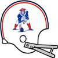
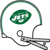

AFL Pro Bowl announced!The AFL Conference has announced their Pro Bowl squad for 1969.
QB Scott Lee - Bills (115/180, 1831 yds, 15 TD)
QB Morris Knight - Broncos (228/305, 2118 yds, 19 TD)
RB TECMO BO JACKSON - Patriots (373 att, 1699 yds, 18 TD, 6 rec, 34 yds, 0 TD)
RB Joe Don Looney - Broncos (229 att, 1064 yds, 12 TD, 8 rec, 59 yds, 0 TD)
RB Lester Ferrari - Bengals (217 att, 1178 yds, 8 TD, 13 rec, 76 yds, 1 TD)
FB Walt Garrison - Raiders (39 att, 94 yds, 12 TD, 11 rec, 78 yds, 0 TD)
G Billy Shaw - Bills (74 Pancakes)
G John Niland - Broncos (71 Pancakes)
T Bob Brown - Raiders (78 Pancakes)
T Norm Evans - Broncos (72 Pancakes)
C Joel Benson - Dolphins (52 Pancakes)
C Jim Otto - Raiders (53 Pancakes)
TE Jerry Zawadzkas - Patriots (41 rec, 407 yds, 5 TD)
TE Bob Klein - Broncos (53 rec, 595 yds, 6 TD)
WR John Eason - Jets (55 rec, 582 yds, 2 TD)
WR Eric Crabtree - Dolphins (70 rec, 894 yds, 6 TD)
WR Samuel Pitman - Patriots (57 rec, 837 yds, 8 TD)
WR Lance Alworth - Chargers (50 rec, 763 yds, 7 TD)
WR Bob Scarpitto - Broncos (81 rec, 827 yds, 9 TD)
CB Lem Barney - Dolphins (66 Tck, 3 Int, 1 FF)
CB Richie Petitbon - Patriots (72 Tck, 3 Int, 1 Def TD, 2 FF)
CB James Cox - Bengals (61 Tck, 1 Sck, 4 Int, 2 FF, 2 FR)
LB Nick Buoniconti - Patriots (102 Tck, 4 Sck, 1 Int, 1 Def TD, 6 FF, 4 FR)
LB Lee Roy Jordan - Raiders (130 Tck, 5 Sck, 5 FF)
LB Jim Lynch - Raiders (143 Tck, 6 Sck, 3 FF, 2 FR)
LB Mike Curtis - Bengals (141 Tck, 2 Sck, 1 Int, 1 Def TD, 4 FF)
DT Earl Johnson - Oilers (43 Tck, 3 Sck, 2 FF, 1 FR)
DT Houston Antwine - Patriots (39 Tck, 2 Sck)
DE L.C. Greenwood - Jets (77 Tck, 13 Sck, 3 FF)
DE Steve DeLong - Broncos (53 Tck, 8 Sck, 2 FF, 1 FR)
FS Johnny Robinson - Chiefs (78 Tck, 1 Sck, 1 Int, 1 FF)
FS Ken Houston - Broncos (74 Tck, 3 Sck, 2 Int, 1 Def TD, 6 FF, 3 FR)
SS Jerry Logan - Patriots (90 Tck, 1 Sck, 1 FF)
SS Henry King - Chargers (73 Tck, 3 Sck, 1 Int, 1 FF, 1 FR)
K Newton Shifflett - Broncos (38/42 FG)
P Wayne Walker - Patriots (2754 yards, 24 inside 20)NFL Pro Bowl announced!The NFL Conference has announced their Pro Bowl squad for 1969.
QB Earl Aguilar - Eagles (174/270, 2722 yds, 16 TD)
QB Fran Tarkenton - Vikings (231/317, 2750 yds, 30 TD)
RB Floyd Little - Saints (344 att, 1459 yds, 9 TD, 28 rec, 182 yds, 0 TD)
RB Calvin Hill - Falcons (331 att, 1502 yds, 10 TD, 14 rec, 122 yds, 0 TD)
RB Donny Anderson - Lions (265 att, 1104 yds, 7 TD, 13 rec, 155 yds, 1 TD)
FB John Travis - Cardinals (74 att, 285 yds, 3 TD)
G Pete Case - Eagles (64 Pancakes)
G John Atwell - Vikings (58 Pancakes)
T Joe Taffoni - Eagles (87 Pancakes)
T Ralph Neely - Vikings (73 Pancakes)
C Jon Morris - Eagles (67 Pancakes)
C John Schmitt - Lions (54 Pancakes)
TE Lee Folkins - Cowboys (36 rec, 429 yds, 1 TD)
TE Fred Arbanas - Steelers (34 rec, 498 yds, 6 TD)
WR Roy Jefferson - Eagles (49 rec, 922 yds, 5 TD)
WR Lawrence Corbin - Eagles (35 rec, 713 yds, 7 TD)
WR Archie Hoang - Packers (73 rec, 919 yds, 4 TD)
WR Fred Biletnikoff - Lions (49 rec, 979 yds, 8 TD)
WR Paul Warfield - Vikings (65 rec, 1112 yds, 16 TD)
CB Jose Cote - Saints (79 Tck, 4 FF)
CB Herb Adderley - Packers (77 Tck, 1 Int, 1 Def TD, 1 FF)
CB Ernie Kellermann - Vikings (59 Tck, 2 Int, 1 Def TD, 3 FF)
LB Dave Wilcox - Redskins (156 Tck, 7 Sck, 2 FF, 1 FR)
LB Dick Butkus - 49ers (151 Tck, 8 Sck, 4 FF, 1 FR)
LB Bobby Bell - Falcons (147 Tck, 3 Sck, 5 FF, 2 FR)
LB Andy Russell - Packers (161 Tck, 2 Sck, 3 FF, 1 FR)
DT Dave Costa - Vikings (43 Tck, 6 Sck, 3 FF, 2 FR)
DT Jim Castle - Vikings (52 Tck, 9 Sck, 2 FF, 1 FR)
DE Ben Davidson - Redskins (41 Tck, 8 Sck, 1 Sfty, 2 FF)
DE Tommy Hart - Vikings (34 Tck, 9 Sck, 1 FF, 2 FR)
FS Karl Kassulke - Eagles (80 Tck, 1 Int, 1 Def TD, 1 FF, 2 FR)
FS Dana Keck - Falcons (42 Tck, 3 Sck, 3 FF, 2 FR)
SS Cornell Green - Cowboys (84 Tck, 1 Sck, 1 Sfty, 2 FF)
SS John Pitts - Vikings (55 Tck, 3 Sck, 2 Int, 1 Def TD, 1 Sfty)
K Jan Stenerud - Redskins (40/43 FG)
P Peter Douglas - Rams (3944 yards, 41 inside 20)QB Fran Tarkenton (Min) wins League MVP! NEW YORK -- The Minnesota Vikings' QB was a landslide winner Friday in balloting by a nationwide panel of 50 sports writers and broadcasters who cover the league. Tarkenton won the MVP award by amassing season totals of 231/317, 2750 yds, 30 TD. NEW YORK -- The Minnesota Vikings' QB was a landslide winner Friday in balloting by a nationwide panel of 50 sports writers and broadcasters who cover the league. Tarkenton won the MVP award by amassing season totals of 231/317, 2750 yds, 30 TD.
"I really accept this award on behalf of the team and the organization because there is no way I would have accomplished this much without everyone creating a winning environment," Tarkenton said after receiving the award.
LB Dick Butkus (SF) wins Defensive Player of the Year! NEW YORK -- In his own view, Dick Butkus put together his best professional season in 1969. How appropriate, then, that he is the Wolverine Studios Sports Newtwork 1969 Defensive Player of the Year. NEW YORK -- In his own view, Dick Butkus put together his best professional season in 1969. How appropriate, then, that he is the Wolverine Studios Sports Newtwork 1969 Defensive Player of the Year.
The versatile Butkus had 151 tackles, 8 sacks, 0 interceptions, and 4 forced fumbles with 0 defensive touchdowns, and was a key to the 49ers' turnaround on defense. His role on the defense earned Butkus a majority of votes Tuesday from a nationwide panel of 50 sports writers and broadcasters who cover the league.
RB TECMO BO JACKSON (Bos) wins Playoff MVP!NEW YORK -- The Boston Patriots' RB took home the 1969 Playoff MVP award today. JACKSON won the award by amassing playoff totals of 78 att, 286 yds, 4 TD.QB Fran Tarkenton (Min) wins Offensive Player of the Year!Minnesota Vikings quarterback Fran Tarkenton is Wolverine Studios Sports Network's Offensive Player of the Year, as selected by a panel of players, coaches and executives.
Tarkenton received 299 first-place votes from the 583 people polled.
Tarkenton in 1969 had 2750 yards and 30 TDs, with only 1 interceptions for a QB Rating of 129.2.DE L.C. Greenwood (NYJ) wins Defensive Rookie of the Year!NEW YORK -- The New York Jets' DE was a landslide winner Friday in balloting by a nationwide panel of 50 sports writers and broadcasters who cover the league. Greenwood won the Rookie of the Year award by amassing season totals of 77 Tck, 13 Sck, 3 FF.RB Calvin Hill (ATL) wins Offensive Rookie of the Year! NEW YORK -- The Atlanta Falcons' RB was a landslide winner Friday in balloting by a nationwide panel of 50 sports writers and broadcasters who cover the league. Hill won the Rookie of the Year award by amassing season totals of 331 att, 1502 yds, 10 TD, 14 rec, 122 yds, 0 TD. NEW YORK -- The Atlanta Falcons' RB was a landslide winner Friday in balloting by a nationwide panel of 50 sports writers and broadcasters who cover the league. Hill won the Rookie of the Year award by amassing season totals of 331 att, 1502 yds, 10 TD, 14 rec, 122 yds, 0 TD.
1969 Super BowlThe Boston Patriots have defeated the Minnesota Vikings in the 1969 Super Bowl.
The final score was Vikings 10 - Patriots 42.
TECMO BO JACKSON - RB had a dominant game on offense playing a key part in the victory.
On defense Richie Petitbon - CB had a stellar outing helping seal the win.NFL Championship GameThe Minnesota Vikings have defeated the Atlanta Falcons in the 1969 NFL Championship Game.
The final score was Vikings 45 - Falcons 17.
Fran Tarkenton - QB had a dominant game on offense playing a key part in the victory.
On defense Ernie Kellermann - CB had a stellar outing helping seal the win.AFL Championship GameThe Boston Patriots have defeated the Denver Broncos in the 1969 AFL Championship Game.
The final score was Patriots 15 - Broncos 6.
Bruce Alford - K had a dominant game on offense playing a key part in the victory.
On defense Jesse Jett - LB had a stellar outing helping seal the win.New York Giants re-signs Luke Nelson as Defensive Coordinator The Giants have announced that they have given Luke Nelson a new contract. Nelson will continue to serve as Defensive Coordinator for 4 years earning 1.5 million pr year. The Giants have announced that they have given Luke Nelson a new contract. Nelson will continue to serve as Defensive Coordinator for 4 years earning 1.5 million pr year.
AFL Divisional RoundThe Boston Patriots have defeated the Miami Dolphins in the 1969 AFL Divisional Round.
The final score was Patriots 30 - Dolphins 3.
TECMO BO JACKSON - RB had a dominant game on offense playing a key part in the victory.
On defense Larry Hand - DE had a stellar outing helping seal the win.AFL Divisional Round The Denver Broncos have defeated the Cincinnati Bengals in the 1969 AFL Divisional Round. The Denver Broncos have defeated the Cincinnati Bengals in the 1969 AFL Divisional Round.
The final score was Broncos 19 - Bengals 17.
Norm Evans - T had a dominant game on offense playing a key part in the victory.
On defense Steve DeLong - DE had a stellar outing helping seal the win.
NFL Divisional RoundThe Minnesota Vikings have defeated the St. Louis Cardinals in the 1969 NFL Divisional Round.
The final score was Vikings 38 - Cardinals 35.
Fran Tarkenton - QB had a dominant game on offense playing a key part in the victory.
On defense Willie Lanier - LB had a stellar outing providing a silver lining to the loss.NFL Divisional RoundThe Atlanta Falcons have defeated the Washington Redskins in the 1969 NFL Divisional Round.
The final score was Redskins 21 - Falcons 27.
Norm Snead - QB had a dominant game on offense playing a key part in the victory.
On defense Terry Kirk - DE had a stellar outing helping seal the win.: DT Mauricio Fennell (Was) has suffered a major injury! The Washington Redskins' DT Mauricio Fennell has suffered an injury: Out (12-16 weeks). The Washington Redskins' DT Mauricio Fennell has suffered an injury: Out (12-16 weeks).
Denver Broncos re-signs Wayne Churchill as Defensive CoordinatorThe Broncos have announced that they have given Wayne Churchill a new contract. Churchill will continue to serve as Defensive Coordinator for 2 years earning 2 million pr year.Week 15: LB Nick Buoniconti (Bos) wins Defensive Player of the WeekLB Buoniconti absolutely dominated in the Patriots 31-20 game with the Miami Dolphins. He finished with 10 Tck, 1 Sck, 1 FF, 2 FR.Week 15: QB Fran Tarkenton (Min) wins Offensive Player of the WeekThe Minnesota Vikings' Fran Tarkenton threw 4 touchdowns, completing 15 of 20 passes for 279 yards in the Vikings victory over the Detroit Lions.
After being drafted in Round 0 of the 0 amateur draft, season number 8 for Tarkenton, has seen some impressive numbers including 30 touchdown passes this season.Game Recaps for Week 15Eagles - 41, Browns - 34
Giants - 13, Cowboys - 6
Packers - 23, Cardinals - 17
Vikings - 40, Lions - 10
Steelers - 28, Saints - 23
49ers - 27, Colts - 6
Rams - 13, Redskins - 9
Falcons - 29, Bears - 10
Bengals - 31, Chiefs - 9
Raiders - 33, Broncos - 10
Patriots - 31, Dolphins - 20
Bills - 30, Jets - 0Dallas Cowboys re-signs Anthony Brady as Defensive CoordinatorThe Cowboys have announced that they have given Anthony Brady a new contract. Brady will continue to serve as Defensive Coordinator for 4 years earning 1.5 million pr year.Game of the Week: Chicago Bears at Atlanta FalconsOur Expert Predictions:
Jeremy Piper : Chicago Bears
I really like their offense. They are 5th in the league passing touchdowns with 19. They will rack up a lot of points.
Mary Moore : Atlanta Falcons
They will win again this week.
Jim Nox : Atlanta Falcons
Surely, the Falcons win. Do not let anyone tell you otherwise.
Darren Francis : Chicago Bears
In the context of this game, a good bet is that Dave Robinson - LB will be a key figure in this game. There is a reason they are paying him this much. They will expect him to deliver this week.
Baltimore Colts pull off the upset! The Baltimore Colts have managed an unlikely win against Green Bay Packers. The Baltimore Colts have managed an unlikely win against Green Bay Packers.
The Packers appeared dejected towards the end of the game, while the Colts kept their cool and drove the victory home. Most pundits had expected the Packers to win with ease, and the loss to such an inferior opponent is a tough blow to the lofty expectations for the program. Meanwhile, the Colts fans were celebrating in the street, having had their hopes for the future bolstered at least momentarily.
Coach Showdown with Simon Sly (Season 1969 Week 15)Time for this weeks get to know your coaches. As always, Simon Sly deliver with this weeks coach comparison. We have an odd couple for you this week.
FRANKLIN DAVIS, DEFENSIVE COORDINATOR, CLEVELAND BROWNS
The Browns currently sit at 5-8.
Franklin Davis favors an aggressive defense. He loves football, and it shows that this is his dreamjob. His eagerness to discuss all aspects of the game is infectious in an organisation.
Franklin Davis runs a 5-2 defense. The onus is on the safeties in his system. It features primarily zone coverage. He aims to shut down the passing game, making the opponent one dimensional. He wants fast linebackers, who can help in coverage.
They are 26th in sacks with 12.
They are 9th in points allowed, averaging 18.7.
They are 4th in pass defense with 130.5 yards given up per game.
They are 23rd in run defense. Giving up 169.9 yards per game.
They are 20th in interceptions with 3.
They are 26th in the league in tackles for loss.
They are 12th in forced fumbles.
Davis outperforms Churchill in assessing player ability.
WAYNE CHURCHILL, DEFENSIVE COORDINATOR, DENVER BRONCOS
The Broncos currently sit at 10-3.
Wayne Churchill does not like gambling on defense. Advocating a bend, but don't break mindset. He is serious and unrelenting, asserts his authority and has little tolerance for distractions.
Wayne Churchill runs a 3-3-5 Hybrid defense. The defense revolves around the linebackers. He prefers mixing up coverage. Churchill aims to field versatile linebackers.
They are 18th in sacks with 21.
They are 12th in points allowed, averaging 18.8.
They are 15th in pass defense with 164.6 yards given up per game.
They are 21st in run defense. Giving up 162.5 yards per game.
They are 7th in interceptions with 8.
They are 24th in the league in tackles for loss.
They are 16th in forced fumbles.
Churchill seems a little bit smarter than Davis.
Churchill takes much more command and is more respected by his players than Davis.
Churchill works with young players somewhat better than Davis.
Week 14: DE Bill Stanfill (Hou) wins Defensive Player of the Week DE Stanfill absolutely dominated in the Oilers 18-14 game with the Buffalo Bills. He finished with 6 Tck, 2 Sck, 2 FF. DE Stanfill absolutely dominated in the Oilers 18-14 game with the Buffalo Bills. He finished with 6 Tck, 2 Sck, 2 FF.
Week 14: RB TECMO BO JACKSON (Bos) wins Offensive Player of the WeekWeek 14's Offensive Player of the Week is Running Back TECMO BO JACKSON. His 28 att, 182 yds, 1 TD performance stood out in the 26 to 14 victory for the Boston Patriots.
The former Tecmo gridiron star is racking up the rushing yards and now has 1593 Yards and 16 Touchdowns for the season.Jackson watch The Saints' front office has announced that they have had inquiries from the league disciplinary committee regarding Bobby Jackson - FB. Bobby Jackson - FB is making it difficult for himself and the Saints. Jackson could be a productive player, but he must be able to stay out of trouble or teams will tire off him sooner rather than later. The Saints' front office has announced that they have had inquiries from the league disciplinary committee regarding Bobby Jackson - FB. Bobby Jackson - FB is making it difficult for himself and the Saints. Jackson could be a productive player, but he must be able to stay out of trouble or teams will tire off him sooner rather than later.
Game Recaps for Week 14Redskins - 30, Eagles - 10
Bears - 24, Lions - 10
Steelers - 23, Browns - 3
Cardinals - 24, Giants - 21
Vikings - 30, Saints - 23
49ers - 26, Cowboys - 12
Colts - 45, Packers - 20
Falcons - 17, Rams - 10
Raiders - 31, Chiefs - 9
Oilers - 18, Bills - 14
Dolphins - 21, Jets - 18
Broncos - 26, Bengals - 21
Patriots - 26, Chargers - 14Game of the Week: Minnesota Vikings at New Orleans SaintsOur Expert Predictions:
Jeremy Piper : Minnesota Vikings
Look for their offense to dominate. They are 3rd in the league pass completion percentage. They are 1st in the league passing touchdowns with 24. They are 2nd in the league in sacks allowed. They are 1st in the league average yards per rush. They are 4th in the league rushing touchdowns with 18. They are 4th in the league rushing yards per game. They average 167.4! They are 1st in the league points scored per game. They average 29.8!
Mary Moore : New Orleans Saints
The Saints are the real deal. They might even blow them out.
Jim Nox : Minnesota Vikings
For this game, a good bet is that Fran Tarkenton - QB has to potential to carry the Vikings offense.
Darren Francis : Minnesota Vikings
When you think of the players that will be on the field, I am certain that Wally Hilgenberg - LB is hard to gameplan for. You blink for a second and he has taken over the game.
St. Louis Cardinals defense dominates! The Cardinals' defense is stonewalling opponents this season. In 12 games they’ve given up only 2319 total yards and 192 points. Willie Lanier - LB is the heart of the defense with 119 tackles on the year. Could the D be back in St. Louis? The Cardinals' defense is stonewalling opponents this season. In 12 games they’ve given up only 2319 total yards and 192 points. Willie Lanier - LB is the heart of the defense with 119 tackles on the year. Could the D be back in St. Louis?
Week 13: DE Willie Holman (ATL) wins Defensive Player of the WeekDE Willie Holman of the Atlanta Falcons has earned the Defensive Player of the Week award. Holman finished with 4 Tck, 1 Sck, 1 FF, 1 FR.Week 13: RB TECMO BO JACKSON (Bos) wins Offensive Player of the WeekThe honor comes after JACKSON's 27 att, 185 yds, 2 TD performance against the Miami Dolphins. JACKSON from Tecmo was selected in round 1, 1 years ago.
JACKSON now has 1411 Rushing Yards and 15 Touchdowns for the season.Game Recaps for Week 13Giants - 27, Eagles - 7
Lions - 33, Packers - 27
Vikings - 13, Cardinals - 3
Saints - 27, Browns - 20
Cowboys - 23, Steelers - 13
Redskins - 33, 49ers - 10
Falcons - 36, Colts - 0
Bears - 34, Rams - 31
Bengals - 33, Raiders - 10
Bills - 27, Chiefs - 23
Broncos - 44, Oilers - 7
Patriots - 30, Dolphins - 23
Chargers - 17, Jets - 10Week 13: T Steve Wright (GB) has suffered a major injury! The Green Bay Packers' T Steve Wright has suffered an injury: Out for the season. The Green Bay Packers' T Steve Wright has suffered an injury: Out for the season.
Game of the Week: St. Louis Cardinals at Minnesota VikingsOur Expert Predictions:
Jeremy Piper : Minnesota Vikings
We are doing a sweepstakes at the network, and I look forward to raking in the winnings for this bet.
Mary Moore : Minnesota Vikings
People tend to underestimate their defense. They are 2nd in sacks with 31. They are 1st in the league pass average yards per rush. They are 4th in forced fumbles.
Jim Nox : Minnesota Vikings
A double digit win.
Darren Francis : Minnesota Vikings
They are well coached. I am sure head coach Michael Brooks has them prepared for this game. He is has a really good understanding of what works offensively. There will be a lot to dissect after this game.
Calvin Hill - RB is looking good!Calvin Hill - RB is looking like a man among boys out there so far this season. If he keeps playing such impressive football, he’s got a shot at making it into the HOF at the end of his careerCoach Showdown with Simon Sly (Season 1969 Week 13)Welcome to Coach Showdown with Simon Sly. We have an odd couple for you this week.
WILLIAM LAWSON, DEFENSIVE COORDINATOR, MINNESOTA VIKINGS
The Vikings currently sit at 10-1.
William Lawson does not like gambling on defense. Advocating a bend, but don't break mindset. He adapts his demeanor to the situation, and does whatever he thinks it takes to get through to his players and co-workers.
William Lawson runs a 5-2 defense. The scheme depends on dominating in the trenches. He prefers mixing up coverage. He wants defensive linemen who can help in runsupport. Lawson aims to field versatile linebackers.
They are 2nd in sacks with 31.
They are 17th in points allowed, averaging 20.9.
They are 21st in pass defense with 187.5 yards given up per game.
They are 12th in run defense. Giving up 141.2 yards per game.
They are 7th in interceptions with 7.
They are 20th in the league in tackles for loss.
They are 4th in forced fumbles.
Lawson outperforms Brady in scouting.
Lawson outperforms Brady in assessing player ability.
Lawson outperforms Brady in player development.
Lawson is not as rigid as Brady.
Lawson works with young players somewhat better than Brady.
ANTHONY BRADY, DEFENSIVE COORDINATOR, DALLAS COWBOYS
The Cowboys currently sit at 6-5.
Anthony Brady wants to stay unpredictable on defense, favoring a balanced approach. He is a silent, strong leader. He does his job meticulously without making unnecessary waves, and expects those around him to do the same.
Anthony Brady runs a 3-3-5 Hybrid defense. His system requires top notch cornerbacks. It features primarily zone coverage. He targets the rungame, daring the offense to pass. To fit his scheme, linebackers must be sure tacklers, who can help shut down the run.
They are 4th in sacks with 30.
They are 6th in points allowed, averaging 17.4.
They are 8th in pass defense with 147.5 yards given up per game.
They are 4th in run defense. Giving up 106.3 yards per game.
They are 1st in interceptions with 10.
They are 14th in the league in tackles for loss.
They are 9th in forced fumbles.
Brady is slightly better than Lawson at estimating player potential.
Week 12: QB Fran Tarkenton (Min) wins Offensive Player of the WeekThe league announced Minnesota Vikings quarterback Fran Tarkenton has been named Offensive Player of the Week.
The Vikings defeated the Baltimore Colts, 51 to 7. Tarkenton did his part, throwing 4 touchdowns, completing 18 of 24 passes for 239 yards. His outstanding performance now brings his season Touchdown to Interception Ratio to 23 to 1, and a passer rating of 124.4.Week 12: DE Aaron Brown (StL) wins Defensive Player of the WeekDE Brown absolutely dominated in the Cardinals 34-10 game with the Detroit Lions. He finished with 3 Tck, 3 Sck, 1 FF, 1 FR.Game Recaps for Week 12Steelers - 17, Redskins - 12
Cowboys - 31, Falcons - 17
Bears - 27, Packers - 13
Vikings - 51, Colts - 7
Giants - 13, Browns - 11
Cardinals - 34, Lions - 10
Saints - 35, Eagles - 28
49ers - 19, Rams - 10
Dolphins - 16, Jets - 13
Patriots - 17, Raiders - 14
Broncos - 39, Chargers - 34
Bengals - 41, Oilers - 14Week 12: LB Reinaldo Johnson (Den) has suffered a major injury!The Denver Broncos' LB Reinaldo Johnson has suffered an injury: Out (12-16 weeks).St. Louis Cardinals re-signs Ronald Forte as Head CoachThe Cardinals have announced that they have given Ronald Forte a new contract. Forte will continue to serve as Head Coach for 7 years earning 6.3 million pr year.Game of the Week: Green Bay Packers at Chicago BearsOur Expert Predictions:
Jeremy Piper : Green Bay Packers
They are on a win streak. They will continue that streak. They will win this game. The way they win this game will tell a lot about what they are as a team.
Mary Moore : Green Bay Packers
In the context of this game, I facy that Herb Adderley - CB will be a key figure in this game. Do not sleep on this guy's ability. I am looking forward to watching this showdown.
Jim Nox : Chicago Bears
Of course the Bears win! With team players like Earl Faison - DE and Rosey Taylor - SS who make everyone around them better, how could they not?
Darren Francis : Chicago Bears
I do not think people realize how good this offense is. Can't lose.
New Orleans Saints surprise everyone!The New Orleans Saints have managed an unlikely win against St. Louis Cardinals.
The Cardinals appeared dejected towards the end of the game, while the Saints kept their cool and drove the victory home. Most pundits had expected the Cardinals to win with ease, and the loss to such an inferior opponent is a tough blow to the lofty expectations for the program. Meanwhile, the Saints fans were celebrating in the street, having had their hopes for the future bolstered at least momentarily.Calvin Hill - RB shines!Calvin Hill - RB is looking amazing out there so far this season. If he keeps playing such outstanding football, he’s got a shot at becoming a hometown favorite.Jimmy Johnson calls out 49ers QB Kilmer after loss.Jimmy Johnson pointed the finger at his fellow 49ers players after they lost. 'We have to step up, all of us.' he said. 'But some guys are not stepping up and we end up losing. They need to get their head in the game', he continued. 'Man, I think a bunch of guys let us down. I could point the finger at many.' the 31 year old FS said. Later in the interview he seemed to indicate that Billy Kilmer - QB was one of the players he had in mind.Jackson watchA person familiar with the Saints says that they are increasingly worries about the off field red flags of Bobby Jackson - FB. With the off field issues of Bobby Jackson - FB boiling up again one has to wonder how long of a leash he has with the Saints. Jackson could play many more years, but to do that he will need to rid himself of the bad elements distracting him and causing headaches for his team.Week 11: DE Claude Humphrey (Dal) wins Defensive Player of the WeekDE Humphrey absolutely dominated in the Eagles 21-9 game with the Dallas Cowboys. He finished with 6 Tck, 3 Sck, 1 FF.Week 11: RB TECMO BO JACKSON (Bos) wins Offensive Player of the WeekThe honor comes after JACKSON's 27 att, 130 yds, 3 TD performance against the Denver Broncos. JACKSON from Tecmo was selected in round 1, 1 years ago.
JACKSON now has 1126 Rushing Yards and 12 Touchdowns for the season.Game Recaps for Week 11Redskins - 23, Giants - 3
Eagles - 21, Cowboys - 9
Packers - 17, Rams - 15
Bears - 27, Steelers - 7
Browns - 19, Lions - 11
Saints - 33, Cardinals - 10
Vikings - 38, 49ers - 14
Falcons - 41, Colts - 7
Raiders - 27, Oilers - 17
Dolphins - 35, Chargers - 14
Bengals - 24, Bills - 17
Patriots - 38, Broncos - 35
Chiefs - 34, Jets - 27Game of the Week: Minnesota Vikings at San Francisco 49ersOur Expert Predictions:
Jeremy Piper : Minnesota Vikings
This is a dominant offense. They are 3rd in the league pass completion percentage. They are 2nd in the league passing touchdowns with 16. They are 3rd in the league in sacks allowed. They are 1st in the league average yards per rush. They are 3rd in the league rushing touchdowns with 14. They are 3rd in the league rushing yards per game. They average 170.9! They are 2nd in the league points scored per game. They average 28.4!
Mary Moore : Minnesota Vikings
I have a lot of respect for head coach Michael Brooks. He is doing great things in Minnesota. Offensively he is a great and innovative thinker.
Jim Nox : Minnesota Vikings
Looking at how the teams match up, I know it is not trendy, but I think that there is this DT named Dave Costa. I expect everyone knows this guy will be a wrecking ball.
Darren Francis : Minnesota Vikings
I just have this gut feeling.
Defense dominates in Houston.The Oilers defensive line is ransacking the men on the other side of the ball so far this season with a total of 14 sacks, 3 forced fumbles and 135 tackles in 10 games.Buffalo Bills Catch the Boston Patriots by surprise! The Buffalo Bills surprises everyone with an unlikely road win against Boston Patriots. The Buffalo Bills surprises everyone with an unlikely road win against Boston Patriots.
The Patriots never manage to take control of the game, while the Bills kept grinding and drove the victory home. The Patriots players had expected an easy victory, and this will be a bitter loss and a tough blow to the self-respect of the program. Meanwhile the Bills fans are ecstatic and are already entertaining thoughts about a cinderella future.
Pittsburgh Steelers surprise everyone! The Pittsburgh Steelers fans are celebrating after the Steelers took down the St. Louis Cardinals. The Pittsburgh Steelers fans are celebrating after the Steelers took down the St. Louis Cardinals.
In a superb effort the Steelers kept at it, and brought home the win. The Cardinals are widely considered to be the better of the two programs, but with the Steelers winning the fans are hoping that the Steelers will soon be able to dance with the big boys.
Coach Showdown with Simon Sly (Season 1969 Week 11)Welcome to Coach Showdown with Simon Sly. This week features two interesting specimens.
RALPH SPRAGUE, OFFENSIVE COORDINATOR, CINCINNATI BENGALS
The Bengals currently sit at 5-4.
Ralph Sprague likes to mix it up on offense, switching between aggressive and conservative styles. His attitude is relaxed, and he is good at making everyone around him feel comfortable and promotes a friendly and unceremonial atmosphere in the organisation.
Ralph Sprague runs a run first West Coast offense. He wants his running backs to focus on running the ball, limiting their other duties. His offense features a lot of outside runs. Fullbacks are not utilized much. It's about taking what the defense gives you in the passing game, according to Sprague.
They are 13th in the league pass completion percentage. They are 9th in the league passing touchdowns with 12. They are 15th in the league passing yards per game. Averaging 150.They are 9th in the league in sacks allowed.They are 26th in the league in pancakes.They are 24th in the league in passes of more than 20 yards.They are 4th in the league average yards per rush.They are 23rd in the league rushing touchdowns with 6.They are 5th in the league rushing yards per game. They average 170.6.They are 15th in the league points scored per game. With an average of 19.2.
Sprague outperforms Mortensen in assessing player ability.
Sprague exhibits way more flexibility than Mortensen.
JOAN MORTENSEN, OFFENSIVE COORDINATOR, DETROIT LIONS
The Lions currently sit at 4-5.
Joan Mortensen wants to be aggressive on offense. He loves football, and it shows that this is his dreamjob. His eagerness to discuss all aspects of the game is infectious in an organisation.
Joan Mortensen runs a run first Power Hybrid offense. His offense features a dink and dunk approach, with short easy passes.
They are 9th in the league pass completion percentage.
They are 1st in the league passing touchdowns with 18.
They are 2nd in the league passing yards per game. Averaging 231.
They are 24th in the league in sacks allowed.
They are 5th in the league in pancakes.
They are 1st in the league in passes of more than 20 yards.
They are 2nd in the league average yards per rush.
They are 6th in the league rushing touchdowns with 13.
They are 8th in the league rushing yards per game. They average 147.4.
They are 1st in the league points scored per game. With an average of 29.4.
Mortensen makes his players hit the weight room more often than Sprague.
Week 10: LB Mike Curtis (CIN) wins Defensive Player of the Week LB Mike Curtis of the Cincinnati Bengals has earned the Defensive Player of the Week award. Curtis finished with 12 Tck, 1 Int, 1 Def TD, 1 FF. LB Mike Curtis of the Cincinnati Bengals has earned the Defensive Player of the Week award. Curtis finished with 12 Tck, 1 Int, 1 Def TD, 1 FF.
Week 10: RB Tony Baker (Phi) wins Offensive Player of the Week Week 10's Offensive Player of the Week is Running Back Tony Baker. His 15 att, 184 yds, 2 TD performance stood out in the 47 to 3 victory for the Philadelphia Eagles. Week 10's Offensive Player of the Week is Running Back Tony Baker. His 15 att, 184 yds, 2 TD performance stood out in the 47 to 3 victory for the Philadelphia Eagles.
The former Iowa State gridiron star is racking up the rushing yards and now has 666 Yards and 3 Touchdowns for the season.
Game Recaps for Week 10Giants - 13, Rams - 7
Redskins - 23, Cowboys - 20
Packers - 30, Browns - 10
Bears - 34, Saints - 13
Vikings - 38, Lions - 23
Steelers - 33, Cardinals - 0
Eagles - 47, Colts - 3
Falcons - 20, 49ers - 9
Bengals - 37, Broncos - 20
Raiders - 31, Jets - 20
Chargers - 45, Chiefs - 17
Dolphins - 35, Oilers - 27
Bills - 24, Patriots - 22Game of the Week: Minnesota Vikings at Detroit LionsOur Expert Predictions:
Jeremy Piper : Minnesota Vikings
They are well coached. I am sure head coach Michael Brooks has them prepared for this game. He makes great offensive adjustments.
Mary Moore : Minnesota Vikings
I expect some incredible plays in this game.
Jim Nox : Detroit Lions
For this game, I think a good bet is that Alex Karras - DT will be a key figure in this game. There is a reason they are paying him this much. They will expect him to deliver this week. Get your popcorn ready.
Darren Francis : Minnesota Vikings
Looking at how the teams match up, I agree with popular opinion that we cannot avoid mentioning Wally Hilgenberg - LB. He has been tearing it up so far this season. He will continue to do so today. A single digit win.
Oakland Raiders upset the Miami Dolphins!The Oakland Raiders fans are celebrating after the Raiders took down the Miami Dolphins.
In a superb effort the Raiders kept at it, and brought home the win. The Dolphins are widely considered to be the better of the two programs, but with the Raiders winning the fans are hoping that the Raiders will soon be able to dance with the big boys.Winning pleases everyone.Jets fans are excited this week after their team mopped the floor with the Bengals. Douglas Arredondo said of his team, ‘We beat em good.’Krause blasts Willie Porter - FS in wake of Colts loss.Paul Krause was furious with his team in an interview after the Colts lost. He called out the effort on both offense and defense. 'These guys, they do not seem hungry. We have to get on the same page. Are we doing this or not?', he complained. 'We lost and somebody is to blame. If you look at the game, you will see some players just are not delivering.' said the Colts CB. Asked to clarify, Krause suggested Willie Porter - FS needs to perform better, but underscored that there was plenty of blame to go around. 'Guys need to listen, we need to get grinding, you cannot just show up and expect to play or expect to win', Krause concluded.Week 9: QB Fran Tarkenton (Min) wins Offensive Player of the WeekThe Minnesota Vikings' Fran Tarkenton threw 3 touchdowns, completing 13 of 24 passes for 178 yards in the Vikings victory over the Chicago Bears.
After being drafted in Round 0 of the 0 amateur draft, season number 8 for Tarkenton, has seen some impressive numbers including 13 touchdown passes this season.Week 9: LB Larry Stallings (SD) wins Defensive Player of the Week LB Larry Stallings of the San Diego Chargers has earned the Defensive Player of the Week award. Stallings finished with 11 Tck, 2 Sck, 1 Int. LB Larry Stallings of the San Diego Chargers has earned the Defensive Player of the Week award. Stallings finished with 11 Tck, 2 Sck, 1 Int.
Game Recaps for Week 9Redskins - 9, Falcons - 7
Steelers - 23, Giants - 15
Cowboys - 27, Eagles - 16
Lions - 45, Saints - 20
Vikings - 35, Bears - 17
Cardinals - 13, Browns - 9
49ers - 28, Packers - 21
Rams - 42, Colts - 10
Jets - 6, Bengals - 0
Chargers - 17, Bills - 0
Raiders - 30, Dolphins - 24
Patriots - 51, Oilers - 6
Broncos - 20, Chiefs - 13Denver Broncos re-signs Willie Luong as Head CoachThe Broncos have announced that they have given Willie Luong a new contract. Luong will continue to serve as Head Coach for 5 years earning 6.3 million pr year.New York Jets re-signs Roger St. John as Offensive CoordinatorThe Jets have announced that they have given Roger St. John a new contract. St. John will continue to serve as Offensive Coordinator for 8 years earning 2.5 million pr year.Atlanta Falcons re-signs Sidney Walters as Head CoachThe Falcons have announced that they have given Sidney Walters a new contract. Walters will continue to serve as Head Coach for 3 years earning 4.5 million pr year.Game of the Week: Chicago Bears at Minnesota VikingsOur Expert Predictions:
Jeremy Piper : Chicago Bears
The leadership on the Bears is great. You look at guys like Rosey Taylor - SS and what he does for a team. Leadership like that helps you win games.
Mary Moore : Minnesota Vikings
The Vikings are a much better team than everyone thinks If they lose this one, I will never hear the end of it.
Jim Nox : Minnesota Vikings
I do not think people realize how good this defense is. They are 5th in forced fumbles.
Darren Francis : Minnesota Vikings
This may be one for the ages.
Coach Showdown with Simon Sly (Season 1969 Week 9)Time for this weeks get to know your coaches. As always, Simon Sly deliver with this weeks coach comparison. Hope you enjoy it.
EVERETTE SNOW, DEFENSIVE COORDINATOR, BUFFALO BILLS
The Bills currently sit at 2-6.
Everette Snow favors an aggressive defense. His attitude is relaxed, and he is good at making everyone around him feel comfortable and promotes a friendly and unceremonial atmosphere in the organisation.
Everette Snow runs a 3-3-5 Hybrid defense. The defense revolves around the linebackers. It features primarily zone coverage. He targets the rungame, daring the offense to pass. To fit his scheme, linebackers must be sure tacklers, who can help shut down the run.
They are 20th in sacks with 11.
They are 17th in points allowed, averaging 21.9.
They are 21st in pass defense with 188.9 yards given up per game.
They are 6th in run defense. Giving up 127.8 yards per game.
They are 10th in interceptions with 4.
They are 1st in the league in tackles for loss.
They are 26th in forced fumbles.
Snow prepares better than Dunlap.
ROGER DUNLAP, DEFENSIVE COORDINATOR, WASHINGTON REDSKINS
The Redskins currently sit at 4-3.
Roger Dunlap favors an aggressive defense. His attitude is relaxed, and he is good at making everyone around him feel comfortable and promotes a friendly and unceremonial atmosphere in the organisation.
Roger Dunlap runs a 3-4 defense. His system requires top notch cornerbacks. He prefers mixing up coverage. He targets the rungame, daring the offense to pass. Dunlap aims to field versatile linebackers.
They are 10th in sacks with 16.
They are 2nd in points allowed, averaging 10.
They are 3rd in pass defense with 130.1 yards given up per game.
They are 2nd in run defense. Giving up 74.9 yards per game.
They are 14th in interceptions with 3.
They are 4th in the league in tackles for loss.
They are 8th in forced fumbles.
Dunlap is slightly more detail oriented than Snow.
Dunlap has a slightly better grasp of coaching defense than Snow.
Week 8: LB Bill Bergey (NYG) wins Defensive Player of the WeekLB Bergey absolutely dominated in the Giants 21-14 game with the San Francisco 49ers. He finished with 13 Tck, 2 Sck, 2 FF.Week 8: RB J.D. Garrett (KC) wins Offensive Player of the Week Week 8's Offensive Player of the Week is Running Back J.D. Garrett. His 18 att, 162 yds, 3 TD performance stood out in the 29 to 21 victory for the Kansas City Chiefs. Week 8's Offensive Player of the Week is Running Back J.D. Garrett. His 18 att, 162 yds, 3 TD performance stood out in the 29 to 21 victory for the Kansas City Chiefs.
The former Grambling State gridiron star is racking up the rushing yards and now has 623 Yards and 7 Touchdowns for the season.
Game Recaps for Week 8Eagles - 20, Redskins - 6
Giants - 21, 49ers - 14
Cardinals - 17, Cowboys - 16
Bears - 24, Colts - 3
Packers - 24, Steelers - 21
Browns - 30, Saints - 20
Vikings - 31, Rams - 28
Falcons - 31, Lions - 24
Bills - 23, Oilers - 20
Bengals - 24, Dolphins - 21
Patriots - 26, Jets - 9
Broncos - 23, Chargers - 13
Chiefs - 29, Raiders - 21Denver Broncos re-signs Bill Hubbard as Offensive CoordinatorThe Broncos have announced that they have given Bill Hubbard a new contract. Hubbard will continue to serve as Offensive Coordinator for 6 years earning 0.5 million pr year.Los Angeles Rams re-signs Donald Lehman as Defensive CoordinatorThe Rams have announced that they have given Donald Lehman a new contract. Lehman will continue to serve as Defensive Coordinator for 7 years earning 2.5 million pr year.Chicago Bears re-signs Jeremy Bryson as Defensive Coordinator The Bears have announced that they have given Jeremy Bryson a new contract. Bryson will continue to serve as Defensive Coordinator for 5 years earning 2.5 million pr year. The Bears have announced that they have given Jeremy Bryson a new contract. Bryson will continue to serve as Defensive Coordinator for 5 years earning 2.5 million pr year.
Baltimore Colts fire Matthew Hart!The Baltimore Colts have announced that Matthew Hart will no longer be their head coach. Instead they have hired John Sherman as an interim replacement to see out the season. Everyone knew the season was lost at this point, but the Baltimore Colts apparently wanted to get a head start on changing the atmosphere.Trade AlertThe Patriots trade Bob Robertson - T and a Patriots 1970 7th Round Pick to the Bengals for Wayne Mass - T.Game of the Week: St. Louis Cardinals at Dallas CowboysOur Expert Predictions:
Jeremy Piper : St. Louis Cardinals
I think their offense is really good.
Mary Moore : St. Louis Cardinals
They are on a win streak. They will continue that streak. They will win this game.
Jim Nox : Dallas Cowboys
The Cowboys are for real!
Darren Francis : St. Louis Cardinals
When you consider the two rosters, you would be a fool not to think that Larry Csonka - RB is going to wreck dominate for the Cardinals offense. It might be a high scoring game.
Charlie Leigh vs Bob Duncum.Sources in Baltimore confirm that Charlie Leigh - RB continues to get attention for all the wrong reasons. There has been numerous under the radar conflicts during training. Often resulting in shouting matches. Coaches came running onto the turf earlier this week in training when Bob Duncum - T alledgedly shoved Charlie Leigh - RB to the ground. This led Charlie Leigh - RB to embark on an explicit-laden tirade. Eventually, Leigh had to be taken into the locker room by the coaches.Week 7: CB Nick Rassas (MIA) wins Defensive Player of the Week CB Nick Rassas of the Miami Dolphins has earned the Defensive Player of the Week award. Rassas finished with 3 Tck, 2 Int, 1 Def TD. CB Nick Rassas of the Miami Dolphins has earned the Defensive Player of the Week award. Rassas finished with 3 Tck, 2 Int, 1 Def TD.
Week 7: RB Joe Don Looney (Den) wins Offensive Player of the WeekWeek 7's Offensive Player of the Week is Running Back Joe Don Looney. His 18 att, 111 yds, 3 TD performance stood out in the 34 to 7 victory for the Denver Broncos.
The former Cameron gridiron star is racking up the rushing yards and now has 486 Yards and 7 Touchdowns for the season.Game Recaps for Week 749ers - 28, Lions - 27
Vikings - 21, Falcons - 14
Browns - 12, Bears - 10
Eagles - 32, Steelers - 14
Cardinals - 13, Redskins - 8
Saints - 23, Packers - 17
Giants - 16, Colts - 10
Cowboys - 14, Rams - 7
Patriots - 20, Bills - 10
Dolphins - 37, Chargers - 21
Bengals - 20, Raiders - 17
Broncos - 34, Chiefs - 7
Jets - 23, Oilers - 7Trade AlertThe Chiefs trade Curt Merz - G and a Chiefs 1971 4th Round Pick to the Broncos for Milt Sunde - G.Trade AlertThe Vikings trade Edgar Atkinson - DT and a Vikings 1970 4th Round Pick to the Steelers for Jim Castle - DT.Game of the Week: Washington Redskins at St. Louis CardinalsOur Expert Predictions:
Jeremy Piper : St. Louis Cardinals
I really think having so strong and vocal leaders like Larry Wilson - CB and Ted Hendricks - LB in the locker room and on the field is invaluable and definitely helps the Cardinals win this game.
Mary Moore : St. Louis Cardinals
I see them winning again this week.
Jim Nox : Washington Redskins
Head coach Irving Castro has this team running like a well oiled machine. He is has a really good understanding of what works offensively.
Darren Francis : Washington Redskins
This should be some good football.
Week 6: LB Willie Lanier (StL) wins Defensive Player of the WeekLB Lanier absolutely dominated in the Cardinals 24-17 game with the New Orleans Saints. He finished with 12 Tck, 1 Int, 1 FF, 1 FR.Week 6: RB Donny Anderson (Det) wins Offensive Player of the Week The honor comes after Anderson's 25 att, 146 yds, 0 TD, 3 rec, 76 yds, 0 TD performance against the Green Bay Packers. Anderson from Texas Tech was selected in round 1, 3 years ago. The honor comes after Anderson's 25 att, 146 yds, 0 TD, 3 rec, 76 yds, 0 TD performance against the Green Bay Packers. Anderson from Texas Tech was selected in round 1, 3 years ago.
Anderson now has 413 Rushing Yards and 2 Touchdowns for the season.
Coach Showdown with Simon Sly (Season 1969 Week 7)Simon Sly is here to bring you another edition of Coach Showdown. Hope you enjoy it.
NICHOLAS JOHNSON, OFFENSIVE COORDINATOR, MINNESOTA VIKINGS
The Vikings currently sit at 4-1.
Nicholas Johnson runs his offense conservatively. He is a silent, strong leader. He does his job meticulously without making unnecessary waves, and expects those around him to do the same.
Nicholas Johnson runs a pass heavy Spread offense. Johnson likes to go over the top of the defense in the passing game. The passing game is predicated on spreading the ball around to multiple targets.
They are 6th in the league pass completion percentage. They are 8th in the league passing touchdowns with 7. They are 7th in the league passing yards per game. Averaging 182.They are 6th in the league in sacks allowed.They are 11th in the league in pancakes.They are 15th in the league in passes of more than 20 yards.They are 8th in the league average yards per rush.They are 13th in the league rushing touchdowns with 6.They are 5th in the league rushing yards per game. They average 159.2.They are 3rd in the league points scored per game. With an average of 26.2.
ROGER ST. JOHN, OFFENSIVE COORDINATOR, NEW YORK JETS
The Jets currently sit at 3-2.
Roger St. John runs his offense conservatively. His attitude is relaxed, and he is good at making everyone around him feel comfortable and promotes a friendly and unceremonial atmosphere in the organisation.
Roger St. John runs a run first Power Hybrid offense. He runs mostly from power formations. It's about taking what the defense gives you in the passing game, according to St. John. He likes receivers who can stretch the field.
They are 2nd in the league pass completion percentage.
They are 12th in the league passing touchdowns with 6.
They are 10th in the league passing yards per game. Averaging 178.6.
They are 12th in the league in sacks allowed.
They are 21st in the league in pancakes.
They are 21st in the league in passes of more than 20 yards.
They are 14th in the league average yards per rush.
They are 3rd in the league rushing touchdowns with 8.
They are 7th in the league rushing yards per game. They average 154.8.
They are 5th in the league points scored per game. With an average of 24.4.
St. John seems a little bit smarter than Johnson.
St. John is better suited to lead a team than Johnson.
Game Recaps for Week 6Cowboys - 15, Redskins - 13
Eagles - 41, Rams - 31
Lions - 37, Packers - 17
Bears - 30, Vikings - 3
Browns - 20, Steelers - 0
Cardinals - 24, Saints - 17
49ers - 30, Colts - 10
Falcons - 40, Giants - 18
Patriots - 26, Bengals - 3
Jets - 20, Bills - 10
Broncos - 22, Raiders - 21
Dolphins - 20, Oilers - 6
Chargers - 41, Chiefs - 16Trade AlertThe Saints trade Willie Parker - DT and a Saints 1970 4th Round Pick to the Cowboys for Bob Lilly - DT.Trade AlertThe Giants trade Rick Sortun - G and a Giants 1970 5th Round Pick to the Lions for Kevin Handy - G.Game of the Week: Minnesota Vikings at Chicago BearsOur Expert Predictions:
Jeremy Piper : Minnesota Vikings
In the context of this game, I facy that Tommy Hart - DE needs to show up, but if he does the Vikings defense is very stingy.
Mary Moore : Minnesota Vikings
This is a dominant offense. They are 3rd in the league pass completion percentage. They are 3rd in the league passing touchdowns with 7. They are 5th in the league rushing yards per game. They average 172.2! They are 1st in the league points scored per game. They average 32!
Jim Nox : Minnesota Vikings
The Vikings are better than you think. They get the W. This game will be so very entertaining.
Darren Francis : Chicago Bears
The leadership on this team is great. Having a guy like Rosey Taylor - SS on the field and in the locker room is exactly what you need to win games like this.
Yary unhappy after the Saints close loss.Ron Yary was not happy in an interview after the Saints lost to the Cowboys. 'Surely, we have to take responsibility, but they were playing dirty, and it is a testament to their character' said the Saints Ron Yary - T. He continued: 'The Cowboys' players will likely take offense to this, but I do not care. It is what it is, they did not deserve to win'.'Week 5: RB Les Josephson (Hou) wins Offensive Player of the WeekWeek 5's Offensive Player of the Week is Running Back Les Josephson. His 21 att, 182 yds, 2 TD performance stood out in the 55 to 14 victory for the Houston Oilers.
The former Augustana (SD) gridiron star is racking up the rushing yards and now has 401 Yards and 3 Touchdowns for the season.Week 5: LB Bobby Bell (ATL) wins Defensive Player of the WeekLB Bobby Bell of the Atlanta Falcons has earned the Defensive Player of the Week award. Bell finished with 13 Tck, 1 Sck, 2 FF, 1 FR.Game Recaps for Week 5Redskins - 22, Giants - 6
Bears - 26, 49ers - 13
Lions - 44, Steelers - 16
Vikings - 38, Packers - 19
Cardinals - 27, Browns - 9
Cowboys - 23, Saints - 20
Rams - 21, Colts - 16
Falcons - 41, Eagles - 6
Oilers - 55, Chiefs - 14
Dolphins - 14, Bills - 10
Patriots - 20, Raiders - 7
Jets - 26, Broncos - 20
Bengals - 20, Chargers - 17Trade AlertThe Chiefs trade Jim Norton - DE and a Chiefs 1970 4th Round Pick to the Jets for Jack Gregory - DE.Game of the Week: Washington Redskins at New York GiantsOur Expert Predictions:
Jeremy Piper : Washington Redskins
I do not think their defense gets enough credit. They are 1st in points allowed, averaging only 5.3. They are 1st in pass defense. They only give up 107.3 per game. They are 3rd in run defense. Giving up only 72.7 yards per game. They are 2nd in the league in tackles for loss. This will be an action-packed affair.
Mary Moore : Washington Redskins
In the context of this game, it seems a given that Ken Willard will be dominant here. The young RB is going to cause headaches for any defense. This week is no difference.
Jim Nox : Washington Redskins
I do not think you get very far against their offense. They are 2nd in the league in sacks allowed. They are 5th in the league points scored per game. They average 24.7!
Darren Francis : Washington Redskins
I just have this gut feeling.
Week 4: RB Lester Ferrari (CIN) wins Offensive Player of the WeekThe honor comes after Ferrari's 12 att, 184 yds, 2 TD performance against the Cincinnati Bengals. Ferrari from Notre Dame was selected in round 3, 0 years ago.
Ferrari now has 271 Rushing Yards and 2 Touchdowns for the season.Coach Showdown with Simon Sly (Season 1969 Week 5)Time for this weeks get to know your coaches. As always, Simon Sly deliver with this weeks coach comparison. I will spare you the meandering and cut to the chase.
LAWRENCE DEJESUS, HEAD COACH, KANSAS CITY CHIEFS
The Chiefs currently sit at 2-2.
Lawrence Dejesus wants to be aggressive on both sides of the ball. He loves football, and it shows that this is his dreamjob. His eagerness to discuss all aspects of the game is infectious in an organisation.
Dejesus has a slightly better grasp of coaching defense than Morgan.
Dejesus is not as rigid as Morgan.
Dejesus seems a little bit smarter than Morgan.
WILLIE MORGAN, HEAD COACH, LOS ANGELES RAMS
The Rams currently sit at 3-0.
Willie Morgan wants to be aggressive on both sides of the ball. He loves football, and it shows that this is his dreamjob. His eagerness to discuss all aspects of the game is infectious in an organisation.
Morgan outperforms Dejesus in scouting.
Morgan is slightly better than Dejesus at estimating player potential.
Morgan makes his players hit the weight room more often than Dejesus.
Morgan works with young players somewhat better than Dejesus.
Week 4: FS Ken Houston (Den) wins Defensive Player of the WeekFS Houston's ball hawking ability was on display in the Broncos 36-17 game with the Buffalo Bills. He finished with 4 Tck, 2 Sck, 2 FF, 2 FR.
"Ken has the unique ability to make plays and generate turnovers." -Broncos Defensive CoordinatorGame Recaps for Week 4Redskins - 30, Colts - 0
Cardinals - 23, Eagles - 20
Saints - 28, Giants - 21
Browns - 21, Cowboys - 19
Falcons - 37, Packers - 6
Bears - 33, Lions - 7
Vikings - 34, Steelers - 31
Rams - 16, 49ers - 10
Dolphins - 24, Chiefs - 9
Jets - 49, Bengals - 27
Broncos - 36, Bills - 17
Chargers - 12, Raiders - 0
Oilers - 25, Patriots - 7Trade AlertThe Falcons trade Joe Carollo - T and a Falcons 1970 5th Round Pick to the Vikings for Francis Peay - T.Game of the Week: Minnesota Vikings at Pittsburgh SteelersOur Expert Predictions:
Jeremy Piper : Minnesota Vikings
For this match up, we should not underestimate that Wally Hilgenberg is the best LB's in this game. He will have a great day and be critical in this game. But it will be much closer than many think..
Mary Moore : Minnesota Vikings
For this game, it should be clear that Wally Hilgenberg - LB will drive the offense crazy.
Jim Nox : Pittsburgh Steelers
I know they lost their last game, but they will get the W this week. A double digit win.
Darren Francis : Pittsburgh Steelers
I really think their defense will make the difference. They are 4th in points allowed, averaging only 10. They are 5th in run defense. Giving up only 82.5 yards per game. They are 3rd in the league pass average yards per rush. It may even be a blow out.
Willie Ellison - RB proves his worth.Willie Ellison - RB is looking great out there so far this season. If he keeps playing such inspired football, he’s got a shot at becoming a hometown favorite.Who is the best FS? Jets' Willie Brown or Saints' Bobby Bryant?When talking to reporters, at a galla event, FS Willie Brown made clear that he does not think Bobby Bryant is 'all that'. The Jets FS said: 'Is he good? sure. Am I better? No question. I would wipe the floor with him any day'. 'haha, and then these clowns on the internet think Bobby Bryant is even comparable to me. You pick and drill, and I would gladly show how wrong they are' said the Jets FS. He added: 'Sure, I do not want to be mean, Bobby Bryant is a decent FS, but seriously just look at the tape'.Week 3: LB Jim Lynch (Oak) wins Defensive Player of the WeekLB Jim Lynch of the Oakland Raiders has earned the Defensive Player of the Week award. Lynch finished with 11 Tck, 2 Sck, 2 FF, 2 FR.Week 3: RB Ed Podolak (Bal) wins Offensive Player of the WeekThe honor comes after Podolak's 16 att, 232 yds, 2 TD performance against the Baltimore Colts. Podolak from Iowa was selected in round 1, 0 years ago.
Podolak now has 280 Rushing Yards and 2 Touchdowns for the season.Game Recaps for Week 3Redskins - 27, Saints - 7
Eagles - 30, 49ers - 23
Giants - 21, Cowboys - 14
Bears - 17, Packers - 10
Vikings - 33, Browns - 27
Cardinals - 17, Steelers - 7
Lions - 41, Colts - 24
Rams - 19, Falcons - 3
Broncos - 27, Dolphins - 0
Patriots - 30, Jets - 20
Raiders - 24, Bills - 3
Chiefs - 31, Bengals - 14
Oilers - 10, Chargers - 7Week 3: G Bill Lueck (StL) has suffered a major injury!The St. Louis Cardinals' G Bill Lueck has suffered an injury: Out (12-16 weeks).Trade AlertThe Cowboys trade Leon Donohue - G and a Cowboys 1970 7th Round Pick to the Bears for Sonny Bishop - G.Game of the Week: New York Giants at Dallas CowboysOur Expert Predictions:
Jeremy Piper : New York Giants
This is a very good defense.
Mary Moore : Dallas Cowboys
I find it hard to bet against coach John Davis. He always has them well prepared. He makes great offensive adjustments. He is doing some clever things with his defense. It may come down to the wire though.
Jim Nox : Dallas Cowboys
Looking at the two rosters, a good bet is that the offense cannot keep Cornell Green - SS down for an entire game. Eventually he will come out of the blue and make a big play.
Darren Francis : New York Giants
You got to like this offense. I see a lot of points being scored in this game.
Patriots lost. Patriots casts blame.Houston Antwine blasted the effort of some teammates after the loss. 'These guys have to show up' he said. 'We all have to take responsibility and make sure we are prepared and some guys are letting the team down'. 'We lost and somebody is to blame. If you look at the game, you will see some players just are not delivering.' said the Patriots DT. Asked to clarify, Antwine suggested Wayne Walker - P needs to perform better, but underscored that there was plenty of blame to go around. 'Guys need to listen, we need to get grinding, you cannot just show up and expect to play or expect to win', Antwine concluded.Coach Showdown with Simon Sly (Season 1969 Week 3)You know what time it is. It is time for your weekly coach comparison with Simon Sly. This is an interesting week.
NICHOLAS JOHNSON, OFFENSIVE COORDINATOR, MINNESOTA VIKINGS
The Vikings currently sit at 1-0.
Nicholas Johnson runs his offense conservatively. He is a silent, strong leader. He does his job meticulously without making unnecessary waves, and expects those around him to do the same.
Nicholas Johnson runs a pass heavy Spread offense. Johnson likes to go over the top of the defense in the passing game. The passing game is predicated on spreading the ball around to multiple targets.
They are 4th in the league pass completion percentage. They are 15th in the league passing touchdowns with 1. They are 3rd in the league passing yards per game. Averaging 256.They are 6th in the league in sacks allowed.They are 9th in the league in pancakes.They are 25th in the league in passes of more than 20 yards.They are 20th in the league average yards per rush.They are 15th in the league rushing touchdowns with 1.They are 16th in the league rushing yards per game. They average 108.They are 8th in the league points scored per game. With an average of 23.
Johnson outperforms Hickman in assessing player ability.
Johnson is better suited to lead a team than Hickman.
TODD HICKMAN, OFFENSIVE COORDINATOR, BOSTON PATRIOTS
The Patriots currently sit at 0-1.
Todd Hickman runs his offense conservatively. He is a silent, strong leader. He does his job meticulously without making unnecessary waves, and expects those around him to do the same.
Todd Hickman runs a run first Power offense. He wants running backs who can also block. Hickman prefers running up the middle. It's about taking what the defense gives you in the passing game, according to Hickman. The passing game is predicated on spreading the ball around to multiple targets.
They are 10th in the league pass completion percentage.
They are 17th in the league passing touchdowns with 1.
They are 19th in the league passing yards per game. Averaging 131.
They are 7th in the league in sacks allowed.
They are 23rd in the league in pancakes.
They are 20th in the league in passes of more than 20 yards.
They are 8th in the league average yards per rush.
They are 6th in the league rushing touchdowns with 2.
They are 4th in the league rushing yards per game. They average 173.
They are 6th in the league points scored per game. With an average of 24.
Hickman outperforms Johnson in scouting.
Hickman is slightly more detail oriented than Johnson.
Hickman is a better offisive mind than Johnson.
Hickman outperforms Johnson in player development.
Hickman is not as rigid as Johnson.
Week 2: LB Fred Carr (Chi) wins Defensive Player of the WeekLB Fred Carr of the Chicago Bears has earned the Defensive Player of the Week award. Carr finished with 13 Tck, 1 Int, 1 FF, 1 FR.Week 2: RB Leroy Kelly (Pit) wins Offensive Player of the WeekWeek 2's Offensive Player of the Week is Running Back Leroy Kelly. His 13 att, 159 yds, 2 TD performance stood out in the 41 to 3 victory for the Pittsburgh Steelers.
The former Morgan State gridiron star is racking up the rushing yards and now has 159 Yards and 2 Touchdowns for the season.Game Recaps for Week 2Giants - 20, Eagles - 14
Cowboys - 30, Colts - 15
Vikings - 23, Packers - 20
Rams - 30, Lions - 17
Redskins - 17, Browns - 9
Steelers - 41, Saints - 3
Bears - 17, Cardinals - 3
49ers - 21, Falcons - 20
Dolphins - 21, Bills - 16
Chiefs - 29, Patriots - 24
Broncos - 17, Oilers - 10
Bengals - 28, Chargers - 7Trade AlertThe Lions trade Bill Munson - QB and a Lions 1970 3rd Round Pick to the Jets for Joe Namath - QB.Game of the Week: Washington Redskins at Cleveland BrownsOur Expert Predictions:
Jeremy Piper : Cleveland Browns
The better team wins. The Browns are the better team. No argument.
Mary Moore : Cleveland Browns
You got to like this offense. This will be a very up and down affair.
Jim Nox : Cleveland Browns
I have a lot of respect for head coach Alfonso Hutcheson. He is doing great things in Cleveland. He is one of the best defensive minds. But it will be a close game.
Darren Francis : Cleveland Browns
Believe me.
'I am better than Falcons' Norm Snead', says Bart StarrPackers QB Bart Starr compared himself to Norm Snead of the Falcons in a postgame interview. The Packers player remarks came in response to some online speculation about who was the better QB. 'I think I have proved what I am. I feel confident about where I am, but I think maybe Norm Snead has a little more he needs to prove, if you get me? At least if he want to be compared to me.', he said.Week 1: QB Scott Lee (Buf) wins Offensive Player of the WeekThe league announced Buffalo Bills quarterback Scott Lee has been named Offensive Player of the Week.
The Bills defeated the Kansas City Chiefs, 31 to 20. Lee did his part, throwing 3 touchdowns, completing 15 of 18 passes for 272 yards. His outstanding performance now brings his season Touchdown to Interception Ratio to 3 to 0, and a passer rating of 158.3.Week 1: DE L.C. Greenwood (NYJ) wins Defensive Player of the WeekDE L.C. Greenwood of the New York Jets has earned the Defensive Player of the Week award. Greenwood finished with 8 Tck, 1 Sck, 2 FF.Game Recaps for Week 1Oilers - 21, Jets - 7
Bills - 31, Chiefs - 20
Chargers - 18, Raiders - 16Season PredictionsThe sports journalists association has published the results of this year's division prediction polls among their twenty top sports journalists.
NFL Capital: Washington Redskins with 8 votes (Runner up: Philadelphia Eagles with 7 votes)
NFL Century: Cleveland Browns with 8 votes (Runner up: Pittsburgh Steelers with 7 votes)
NFL coastal: San Francisco 49ers with 11 votes (Runner up: Baltimore Colts with 7 votes)
NFL Central: Green Bay Packers with 11 votes (Runner up: Minnesota Vikings with 9 votes)
AFL East: Boston Patriots with 10 votes (Runner up: Buffalo Bills with 6 votes)
AFL West: Oakland Raiders with 11 votes (Runner up: San Diego Chargers with 7 votes)Trade AlertThe Chargers trade Bob Hughes - DE and a Chargers 1970 3rd Round Pick to the Saints for Coy Bacon - DE.Game of the Week: Kansas City Chiefs at Buffalo BillsOur Expert Predictions:
Jeremy Piper : Buffalo Bills
Definitely the losing streak is on their minds. They will get the win and break it in this game. There will be some wild plays in this game.
Mary Moore : Buffalo Bills
I love what they are doing in Buffalo coaching-wise. Head coach Jeremy Otero is a major reason they will win this game. He is doing some really smart things on offense. They will rack up a lot of points.
Jim Nox : Buffalo Bills
This defense is likely to step up this week. It might be a high scoring game.
Darren Francis : Kansas City Chiefs
This is just what my gut tells me. The referees will have their work cut out for them. This will be very competitive and intense.
Training Camp highlightsIt looks like Miami Dolphins hit the jackpot when they drafted Fest, H. - G this year. Fest has delivered astonishing progress in trainingcamp. The sky is the ceiling for this kid!Training Camp highlightsIt looks like New York Jets hit the jackpot when they drafted Hayhoe, B. - T this year. Hayhoe has delivered astonishing progress in trainingcamp. The sky is the ceiling for this kid!Training Camp highlightsIt looks like Green Bay Packers hit the jackpot when they drafted Landry, G. - QB this year. Landry has delivered astonishing progress in trainingcamp. The sky is the ceiling for this kid!DT Bill Kindricks (N/A) has retired!DT Bill Kindricks (54 ovr) has retired after failing to get signed in free agency.Post Free Agency RetirementsThe following players have retired after going unsigned through free agency:
RB Paul Hornung
RB Garrett Ford
RB Terry Cole
RB Jeff Williams
RB Charlie Brown
RB Paul Dudley
RB Pete Tatman
WR Jamison Melendez
WR Jim Beirne
WR Oscar Donahue
WR Randy Kerbow
WR Bill Murphy
CB Alvin Hall
CB Solomon Brannan
CB Willie Williams
CB Sherman Lewis
CB Frank Budka
LB Rommie Loudd
LB Samuel Rogers
LB Ernie Clark
LB Dave Ogas
LB Mike Reilly
LB Gordon Lambert
LB Dean HalversonRB Tom Barrington (N/A) has retired!RB Tom Barrington (61 ovr) has retired after failing to get signed in free agency.DE Lou Michaels (N/A) has retired!DE Lou Michaels (72 ovr) has retired after failing to get signed in free agency.Free Agency Round 10: Round Up34 players signed this week.
The biggest name signing this week was Alexander Turner. The QB out of Syracuse signed a $250,000 contract for 4 year(s) with New Orleans Saints.
NFL Central was the most active division with a total of 9 signings.
Pittsburgh Steelers was the most active signing a total of 3 player(s).
The biggest spender was Green Bay Packers who signed 2 player(s) for a total of $386,500.Free Agency Round 9: Round Up40 players signed this week.
The biggest name signing this week was Arthur Long. The WR out of N.C. State signed a $390,000 contract for 2 year(s) with Oakland Raiders.
AFL East was the most active division with a total of 8 signings.
New Orleans Saints was the most active signing a total of 3 player(s).
The biggest spender was New York Giants who signed 2 player(s) for a total of $430,000.Free Agency Round 8: Round Up43 players signed this week.
The biggest name signing this week was Mauricio Fennell. The DT out of Wake Forest signed a $480,000 contract for 2 year(s) with Washington Redskins.
AFL East was the most active division with a total of 10 signings.
Boston Patriots was the most active signing a total of 4 player(s).
The biggest spender was Washington Redskins who signed 2 player(s) for a total of $540,000.Free Agency Round 7: Round Up35 players signed this week.
The biggest name signing this week was Shawn Alexander. The G out of Oklahoma signed a $540,000 contract for 3 year(s) with Boston Patriots.
AFL East was the most active division with a total of 10 signings.
Green Bay Packers was the most active signing a total of 4 player(s).
The biggest spender was New York Jets who signed 4 player(s) for a total of $1,152,500.Free Agency Round 6: Round Up34 players signed this week.
The biggest name signing this week was Jerry Jones. The T out of Bowling Green signed a $670,000 contract for 3 year(s) with St. Louis Cardinals.
NFL Century was the most active division with a total of 10 signings.
New York Jets was the most active signing a total of 4 player(s).
The biggest spender was Oakland Raiders who signed 3 player(s) for a total of $1,207,500.WR Kelvin Glenn (ATL) goes #1 overall!NEW YORK -- The Atlanta Falcons drafted Kelvin Glenn #1 overall in the 1969 draft. The 5' 11" WR fits the team's needs perfectly. Said Falcons general manager: "It's up to us to develop him and get good players around him."
"The great thing about the game of football is, it's a team game," Glenn said on a conference call. "I'm just going to be one piece of the puzzle."Moore and Nox Mock DraftPick 1: Atlanta Falcons
Larry Moore: Ted Hendricks - LB
This is a player who takes the lead. Tackles with good leverage. Rarely lets people go. His physical foundation given him an nice ceiling. He closes so fast. Offensive tackles will learn that the hard way. They almost have to make this pick. You do not want to look back in five years and see this kid on another team knowing he could have been yours.
Jim Nox: Ted Hendricks - LB
Every team values leadership, someone to lead by example, this is the guy. Reliably takes down ball carrier when he gets to him. This is a young man who has enough strength to shed blocks. Did I mention strength?. He is going to get so many sacks, just from his speed alone. Elite speed coming of the edge is what you are paying for with this young man. With this kid, this is a need pick they will not regret.
Pick 2: Dallas Cowboys
Larry Moore: Eric Ramos - QB
He does not get fooled by coverages often. He always gives the receiver a chance to make the play. Delivers the ball with zip and purpose. Once this kid gets in the building, they will be set at this position for years.
Jim Nox: Roger Wehrli - CB
I mean come on! Did you see how fast he is? They should not be afraid to fill a need here. He will start day one. Quality pick right here.
Pick 3: San Diego Chargers
Larry Moore: Roger Wehrli - CB
Almost no one can outrun this young man. You can put him in man coverage against anyone. Plug a hole in the roster with a great player. That is really what they need to do. This pick does it.
Jim Nox: Bill Bergey - LB
His good natured behavior, even toward opponents have earned him some criticism, but also an awful lot of respect. Can bull rush smaller Tight Ends and Fullbacks when blitzing. Coaches love this kind on their Linebackers. Is speedy enough to stay on the field in passing situations. Reacts intelligently on the field. Fits nicely with their needs. Fits nicely with the draft spot. Getting it right is important with these early picks. This guy is right.
Pick 4: New Orleans Saints
Larry Moore: Roger Staubach - QB
Great ball placement. If you ever need a hail mary, this guy will throw it from the parking lot. They need playmakers at this position. This is what they are getting here. Solid pick.
Jim Nox: Ed White - G
A leader on the field and in the locker room. Football is a team sport, and he knows it. Not the strongest we have seen, but definitely strong enough to hold his own. Execution in the running game is something coaches have noticed about him. He blocks pretty well. He was one of the smarter kids in college. He will get a great chance to earn the starting job. He fits what they are looking for. He is a solid player. Cannot go wrong here.
Pick 5: Cincinnati Bengals
Larry Moore: Bill Bergey - LB
Respected for his good behavior on the field. Really strong. Will push through blocks. More than enough speed for the position. This will become evident as he develops. Can be relied upon to understand his role on any given play. With this kid, this is a need pick they will not regret.
Jim Nox: George Kunz - T
Known for helping out teammates, if they hit a rough patch, whether it is on the field or in their personal lives. Even though this is a youngster right out of college, he is strong like a grown man. Teams are always looking for run blockers with a mean streak. This kid fit that bill. He run blocks like a beast. Pass blocking against professional players makes for a difficult transition from college. But the tape indicates he will do well in that regard. A player that fits their needs. The promise of a future star. This will be great for the franchise.
Pick 6: Minnesota Vikings
Larry Moore: Calvin Hill - RB
His college coaches talk highly of his work ethic. Well liked in the locker room. Nice fluid motion through the line. Coaches salivate over his blazing speed. Good enough strength to play with the pros. They should not be afraid to fill a need here. He will start day one. Quality pick right here.
Jim Nox: Calvin Hill - RB
Known for showing up early and staying late. The guy has gets along with everyone. Good change of direction ability. What you strikes you on his tape is that break away speed. Has sufficient strength to grind out yards on inside runs. They would be crazy not to take him here. A great fit, both in terms of what they need and the quality of player they get. This will put a smile on many faces.
Pick 7: St. Louis Cardinals
Larry Moore: George Kunz - T
Known for helping out teammates, if they hit a rough patch, whether it is on the field or in their personal lives. Did you see him bench press?! Wow! He blocks in the running game with great leverage and technique. His pass blocking skills are definitely adding to his value. He will need to hold his own against fully grown men, and teams believe he can do that. It is all about fit here. Is there a guy at a position of need, worthy of a pick this high? The answer, obviously, is 'heck yeah'.
Jim Nox: Eric Ramos - QB
He understands playing offense at the pro level. He always gives the receiver a chance to make the play. Nice arm, will be even better in a couple of seasons. Blue-chip player. Exactly what they look for. Add a young talent to a roster thin at the position, a great fit.
Pick 8: Los Angeles Rams
Larry Moore: Bill Stanfill - DE
Here is a kid who no one doubts will put in the work. The ultimate team player. He has sufficient strength to not get bulllied on run plays. This young man is fast enough to drop even the fast RBs for losses is they come his way. Consistently takes down ball carrier on tackles. He addresses a need for them.
Jim Nox: Bill Stanfill - DE
The guy has his head on straight. Raised to know the value of teamwork. His strength is a good platform for him, surely a reason teams like him this high. Deceptively fast, will make you dizzy with his speed rush. Coaches like how well he tackles. Take the blue-chip player. Do not worry about sexier picks. He fits what you need and the quality is there.
Pick 9: Detroit Lions
Larry Moore: Bill Thompson - SS
Every team values leadership, someone to lead by example, this is the guy. This is a kid who really contributes to the team spirit and the social cohesiveness on the team. He closes fast. Can really go sideline to sideline. Straight line speed is really a great asset here. Reliably takes down ball carrier when he gets his hands on him. They need him now. Well yesterday actually. They will love him tomorrow. They will revere him by the end of his career.
Jim Nox: Bill Thompson - SS
Intangibles, leadership, what's not to love? Known for being a bit of a joker in the locker room. but in the good way, everyone smiles when asked about him. Great speed for a Strong Safety. You can ask him to go in man coverage, and not be worried. It is clear from his tape, that he wraps up well on tackles. People always say you should not prioritize needs over quality. That is not an issue here, they get to have their cake and eat it too.
Pick 10: New York Giants
Larry Moore: L.C. Greenwood - DE
Known among his teammates as a bit of a goofball, but never in a bad way. The kind that keeps spirits high even when a season goes south. When he pins back his ears and goes for the passer he will demand some serious attention from the offensive line. A great tackler. Consistent. Works well in the classroom. They need him now. Well yesterday actually. They will love him tomorrow. They will revere him by the end of his career.
Jim Nox: L.C. Greenwood - DE
He takes care of his teammates. Most everyone who ever played with him, counts him as their friend. Rarely do we call defensive linemen sideline to sideline defenders, but this kid is so fast the term almost applies. Reliably takes down ball carrier when he gets his hands on him. Understands the game well. Knows what to do in different situations. Plug a hole in the roster with a great player. That is really what they need to do. This pick does it.
Free Agency Round 3: Round Up1 players signed this week.
The biggest name signing this week was Dick Westmoreland. The SS out of North Carolina A&T signed a $670,000 contract for 2 year(s) with New Orleans Saints.
NFL Century was the most active division with a total of 1 signings.
New Orleans Saints was the most active signing a total of 1 player(s).
The biggest spender was New Orleans Saints who signed 1 player(s) for a total of $670,000.Free Agency Round 2: Round Up9 players signed this week.
The biggest name signing this week was Mike Stratton. The LB out of Tennessee signed a $1,000,000 contract for 1 year(s) with Buffalo Bills.
AFL West was the most active division with a total of 3 signings.
Pittsburgh Steelers was the most active signing a total of 2 player(s).
The biggest spender was Pittsburgh Steelers who signed 2 player(s) for a total of $1,820,000.LB Max Messner (NYG) signs large free agent deal!NEW YORK -- Anxious all week, LB Max Messner was finally catching some sleep at home in Charlotte, N.C., when he found out just how serious the New York Giants were about acquiring him.
The free-agent signing period had just begun, and Messner's agent called to tell him that the Giants head coach was in town. Soon, Messner was meeting him at an executive airport.
Now, Messner is being fitted for a Giants uniform.
One of the league's top LBs and top free-agent prize agreed Friday to a 2 year contract worth $1,000,000.
"It's one thing to play football in this league and make a living, but it's a totally different thing to come to a place with a rich tradition like the Giants," Messner said.DT Roland Lakes (SF) signs large free agent deal!NEW YORK -- Roland Lakes, one of the league's top DTs and top free-agent prize agreed to a 3 year contract worth $820,000 to play for the San Francisco 49ers.DE Deacon Jones (Pit) signs large free agent deal!NEW YORK -- Deacon Jones, one of the league's top DEs and top free-agent prize agreed to a 1 year contract worth $920,000 to play for the Pittsburgh Steelers.FS Johnny Sample (Pit) signs large free agent deal!NEW YORK -- Johnny Sample, one of the league's top FSs and top free-agent prize agreed to a 1 year contract worth $900,000 to play for the Pittsburgh Steelers.CB George Saimes (Oak) signs large free agent deal!NEW YORK -- Anxious all week, CB George Saimes was finally catching some sleep at home in Charlotte, N.C., when he found out just how serious the Oakland Raiders were about acquiring him.
The free-agent signing period had just begun, and Saimes's agent called to tell him that the Raiders head coach was in town. Soon, Saimes was meeting him at an executive airport.
Now, Saimes is being fitted for a Raiders uniform.
One of the league's top CBs and top free-agent prize agreed Friday to a 2 year contract worth $960,000.
"It's one thing to play football in this league and make a living, but it's a totally different thing to come to a place with a rich tradition like the Raiders," Saimes said.LB Dan Conners (LA) signs large free agent deal!NEW YORK -- Anxious all week, LB Dan Conners was finally catching some sleep at home in Charlotte, N.C., when he found out just how serious the Los Angeles Rams were about acquiring him.
The free-agent signing period had just begun, and Conners's agent called to tell him that the Rams head coach was in town. Soon, Conners was meeting him at an executive airport.
Now, Conners is being fitted for a Rams uniform.
One of the league's top LBs and top free-agent prize agreed Friday to a 1 year contract worth $1,000,000.
"It's one thing to play football in this league and make a living, but it's a totally different thing to come to a place with a rich tradition like the Rams," Conners said.LB Mike Stratton (Buf) signs large free agent deal!NEW YORK -- Anxious all week, LB Mike Stratton was finally catching some sleep at home in Charlotte, N.C., when he found out just how serious the Buffalo Bills were about acquiring him.
The free-agent signing period had just begun, and Stratton's agent called to tell him that the Bills head coach was in town. Soon, Stratton was meeting him at an executive airport.
Now, Stratton is being fitted for a Bills uniform.
One of the league's top LBs and top free-agent prize agreed Friday to a 1 year contract worth $1,000,000.
"It's one thing to play football in this league and make a living, but it's a totally different thing to come to a place with a rich tradition like the Bills," Stratton said.Free Agency Round 1: Round Up10 players signed this week.
The biggest name signing this week was John Mackey. The TE out of Syracuse signed a $1,000,000 contract for 1 year(s) with Cleveland Browns.
NFL Capital was the most active division with a total of 3 signings.
Cleveland Browns was the most active signing a total of 2 player(s).
The biggest spender was Cleveland Browns who signed 2 player(s) for a total of $1,730,000.T Len Rohde (NYJ) signs large free agent deal!NEW YORK -- Anxious all week, T Len Rohde was finally catching some sleep at home in Charlotte, N.C., when he found out just how serious the New York Jets were about acquiring him.
The free-agent signing period had just begun, and Rohde's agent called to tell him that the Jets head coach was in town. Soon, Rohde was meeting him at an executive airport.
Now, Rohde is being fitted for a Jets uniform.
One of the league's top Ts and top free-agent prize agreed Friday to a 2 year contract worth $931,499.
"It's one thing to play football in this league and make a living, but it's a totally different thing to come to a place with a rich tradition like the Jets," Rohde said.T Harry Schuh (NYG) signs large free agent deal!NEW YORK -- Harry Schuh, one of the league's top Ts and top free-agent prize agreed to a 4 year contract worth $820,000 to play for the New York Giants.RB Les Josephson (Hou) signs large free agent deal!NEW YORK -- Anxious all week, RB Les Josephson was finally catching some sleep at home in Charlotte, N.C., when he found out just how serious the Houston Oilers were about acquiring him.
The free-agent signing period had just begun, and Josephson's agent called to tell him that the Oilers head coach was in town. Soon, Josephson was meeting him at an executive airport.
Now, Josephson is being fitted for a Oilers uniform.
One of the league's top RBs and top free-agent prize agreed Friday to a 4 year contract worth $860,000.
"It's one thing to play football in this league and make a living, but it's a totally different thing to come to a place with a rich tradition like the Oilers," Josephson said.TE John Mackey (Cle) signs large free agent deal! NEW YORK -- Anxious all week, TE John Mackey was finally catching some sleep at home in Charlotte, N.C., when he found out just how serious the Cleveland Browns were about acquiring him. NEW YORK -- Anxious all week, TE John Mackey was finally catching some sleep at home in Charlotte, N.C., when he found out just how serious the Cleveland Browns were about acquiring him.
The free-agent signing period had just begun, and Mackey's agent called to tell him that the Browns head coach was in town. Soon, Mackey was meeting him at an executive airport.
Now, Mackey is being fitted for a Browns uniform.
One of the league's top TEs and top free-agent prize agreed Friday to a 1 year contract worth $1,000,000.
"It's one thing to play football in this league and make a living, but it's a totally different thing to come to a place with a rich tradition like the Browns," Mackey said.
Offseason Team Needs with Jeremy PiperWith a new offseason under way, some rosters are in good shape. However, other teams have big needs to address this offseason. Your always trusty Jeremy Piper here brings you a quick glance at the teams with work to do. Whether they fill their needs in the draft or with veterans in free agency remains to be seen.
Here we go:
Dallas Cowboys: G T TE CB LB DT
New York Giants: G T WR CB LB DE FS
Washington Redskins: QB RB CB LB DT
Philadelphia Eagles: QB T CB LB DT DE
Cleveland Browns: QB G C TE CB LB SS
St. Louis Cardinals: QB T C TE WR CB LB SS
New Orleans Saints: G WR CB LB DT SS
Pittsburgh Steelers: QB TE WR CB DE FS SS
Baltimore Colts: QB RB G T WR CB LB DT DE
Los Angeles Rams: T WR CB DE FS
San Francisco 49ers: QB G TE LB DE SS
Atlanta Falcons: QB RB G T C TE WR CB LB DT
Green Bay Packers: RB G TE CB DE FS
Chicago Bears: QB RB G T TE WR CB LB FS SS
Detroit Lions: QB T WR CB LB DT SS
Minnesota Vikings: RB TE WR CB LB
New York Jets: G T TE WR CB LB DT SS
Houston Oilers: QB T WR CB LB DT
Miami Dolphins: G T TE WR CB LB DT FS
Boston Patriots: T C WR CB LB DT
Buffalo Bills: QB RB C WR CB LB SS
Oakland Raiders: QB T WR CB DT DE SS
Kansas City Chiefs: G T WR CB LB DT
San Diego Chargers: T CB LB
Denver Broncos: WR CB LB DT SS
Cincinnati Bengals: G T CB LB DE FS SS
San Diego Chargers announce new staff.Albert Zambrano will be serving as the new General Manager for the Chargers . He will get a 1 year contract worth 4.5 million pr year with the Chargers.Cincinnati Bengals announce new staff.Bengals revealed that they have signed Ralph Sprague as their new Offensive Coordinator. He will get a 4 year contract worth 2 million pr year with the Bengals.
Other news included that Bengals have signed Donald Merrell as their new Defensive Coordinator. Merrell will get a 4 year contract worth 2 million pr year with the Bengals.Buffalo Bills announce new staff.Chris Dubose will be serving as the new General Manager for the Bills . He will get a 3 year contract worth 4.7 million pr year with the Bills.Oakland Raiders announce new staff.The Raiders have announced that they have signed Matthew Berman as their new Head Coach. He will get a 4 year contract worth 0.5 million pr year with the Raiders.Kansas City Chiefs announce new staff.Chiefs revealed that they have signed Wayne Fanning as their new Offensive Coordinator. He will get a 3 year contract worth 2 million pr year with the Chiefs.
It was also revealed that Jimmy O'Donnell will be serving as the new General Manager for the Chiefs . He will get a 1 year contract worth 5.3 million pr year with the Chiefs.Miami Dolphins announce new staff.Dolphins revealed that they have signed Roger Nye as their new Offensive Coordinator. He will get a 4 year contract worth 2 million pr year with the Dolphins.
Other news included that Dolphins have signed Jerome Stevens as their new Defensive Coordinator. Stevens will get a 2 year contract worth 0.5 million pr year with the Dolphins.Boston Patriots announce new staff.Ralph Mcswain will be serving as the new General Manager for the Patriots . He will get a 1 year contract worth 3.7 million pr year with the Patriots.St. Louis Cardinals announce new staff.Cardinals have signed Clyde Rosser as their new Defensive Coordinator. Rosser will get a 3 year contract worth 2 million pr year with the Cardinals.Baltimore Colts announce new staff.Colts revealed that they have signed Jay Mullins as their new Offensive Coordinator. He will get a 4 year contract worth 1.5 million pr year with the Colts.Los Angeles Rams announce new staff.Rams revealed that they have signed Richard Barney as their new Offensive Coordinator. He will get a 2 year contract worth 2 million pr year with the Rams.San Francisco 49ers announce new staff.Garland Bird will be serving as the new General Manager for the 49ers . He will get a 2 year contract worth 3.1 million pr year with the 49ers.Atlanta Falcons announce new staff.Falcons have signed Stephen Dotson as their new Defensive Coordinator. Dotson will get a 3 year contract worth 2 million pr year with the Falcons.Detroit Lions announce new staff.Lions have signed Nicholas Kinsey as their new Defensive Coordinator. Kinsey will get a 3 year contract worth 0.5 million pr year with the Lions.
It was also revealed that Edwin Garcia will be serving as the new General Manager for the Lions . He will get a 2 year contract worth 4.2 million pr year with the Lions.Dallas Cowboys announce new staff.Cowboys revealed that they have signed Harold Goulet as their new Offensive Coordinator. He will get a 3 year contract worth 1.5 million pr year with the Cowboys.Philadelphia Eagles announce new staff.Gary Valadez will be serving as the new General Manager for the Eagles . He will get a 2 year contract worth 3.9 million pr year with the Eagles.Minnesota Vikings hire Michael Brooks away from the Baltimore ColtsThe Vikings have announced that they have signed Michael Brooks as their new Head Coach. Brooks was previously working for Colts as Offensive Coordinator. He will get a 3 year contract worth 2.5 million pr year with the Vikings.Jeffrey Hidalgo staying with Pittsburgh SteelersThe Oakland Raiders tried to pry Jeffrey Hidalgo away from Steelers to fill the position as their new Head Coach. However, Hidalgo publicly dismissed that a move was imminent, and that assured fans that he would stay with Steelers as their Offensive Coordinator for the coming season.Jeffrey Hidalgo staying with Pittsburgh SteelersThe Minnesota Vikings tried to pry Jeffrey Hidalgo away from Steelers to fill the position as their new Head Coach. However, Hidalgo publicly dismissed that a move was imminent, and that assured fans that he would stay with Steelers as their Offensive Coordinator for the coming season.New Orleans Saints hire Robert Molina away from FalconsThe Saints have announced that they have signed Robert Molina as their new Head Coach. Molina was previously working for Falcons as Defensive Coordinator. He will get a 4 year contract worth 5.5 million per year with the Saints.Draft Order: Atlanta Falcons own first overall.Pick 1: Atlanta Falcons
Pick 2: Dallas Cowboys
Pick 3: San Diego Chargers
Pick 4: New Orleans Saints
Pick 5: Cincinnati Bengals
Pick 6: Minnesota Vikings
Pick 7: St. Louis Cardinals
Pick 8: Los Angeles Rams
Pick 9: Detroit Lions
Pick 10: New York Giants
Pick 11: Pittsburgh Steelers
Pick 12: Kansas City Chiefs
Pick 13: New York Jets
Pick 14: Oakland Raiders
Pick 15: Miami Dolphins
Pick 16: Chicago Bears
Pick 17: Philadelphia Eagles
Pick 18: Baltimore Colts
Pick 19: Denver Broncos
Pick 20: Houston Oilers
Pick 21: Washington Redskins
Pick 22: San Francisco 49ers
Pick 23: Boston Patriots
Pick 24: Green Bay Packers
Pick 25: Cleveland Browns
Pick 26: Buffalo Bills
Coaching Carousel Predictions.The offseason is upon us and that means teams are shaking up their coaching staffs. This means that we get to take our annual look at coordinators who could make the leap to become head coaches, and the teams who are likely to poach them.
The prime candidates identified by our experts are:
Luke Nelson - Defensive Coordinator - New York Giants
Robert Wilder - Offensive Coordinator - Washington Redskins
Cody Lowe - Defensive Coordinator - Houston Oilers
Theodore Dwyer - Offensive Coordinator - Buffalo Bills
Alexander Gibson - Defensive Coordinator - Oakland Raiders
Bill Hubbard - Offensive Coordinator - Denver Broncos
Brian Lashley - Offensive Coordinator - New Orleans Saints
As always, we are prone to wild speculations, so we asked our in-house experts to do a little matchmaking between candidates and teams. Here is what they came up with:
Mary Moore:
I see Alexander Gibson being promoted to head coach of the Oakland Raiders.
Darren Francis:
I think the Giants lose Luke Nelson and I see him heading to Minnesota Vikings.
Jim Nox:
The Redskins cannot hold on to Robert Wilder. I would like to see him coach the New Orleans Saints.
Jeremy Piper:
Luke Nelson is certainly on the move. That means Giants will need a new coordinator. As for where Nelson ends up? Well, I think New Orleans Saints is a good bet.Contract UpdatesThe following players have unlocked bonuses in their contracts based on their performance last season:
Tom Woodeshick - RB (Dallas Cowboys) unlocked a 5% bonus for Avg. Rush Gain (Target: 4 / Accomplished: 4).
Gary Larsen - DT (New York Giants) unlocked a 10% bonus for Games Started (Target: 7 / Accomplished: 14).
Ben Davidson - DE (Washington Redskins) unlocked a 10% bonus for Sacks (Target: 5 / Accomplished: 7).
Billy Clay - SS (Washington Redskins) unlocked a 10% bonus for Games Started (Target: 7 / Accomplished: 13).
Bernie Parrish - FS (Cleveland Browns) unlocked a 5% bonus for Tackles (Target: 40 / Accomplished: 54).
Buck Buchanan - DT (St. Louis Cardinals) unlocked a 10% bonus for Tackles (Target: 40 / Accomplished: 52).
Don Meredith - QB (St. Louis Cardinals) unlocked a 5% bonus for Games Started (Target: 7 / Accomplished: 13).
Rich Jackson - DE (New Orleans Saints) unlocked a 5% bonus for Games Started (Target: 7 / Accomplished: 12).
Hollis Talley - WR (Pittsburgh Steelers) unlocked a 5% bonus for Receiving TDs (Target: 5 / Accomplished: 8).
Leroy Kelly - RB (Pittsburgh Steelers) unlocked a 10% bonus for Avg. Rush Gain (Target: 4 / Accomplished: 4.2).
Tom Matte - RB (Baltimore Colts) unlocked a 5% bonus for Rushing TDs (Target: 5 / Accomplished: 8).
Eddie Meador - FS (Los Angeles Rams) unlocked a 10% bonus for Games Started (Target: 7 / Accomplished: 14).
Ernie Koy - RB (Los Angeles Rams) unlocked a 5% bonus for Rushing TDs (Target: 5 / Accomplished: 7).
Charlie Harper - T (San Francisco 49ers) unlocked a 10% bonus for Games Started (Target: 7 / Accomplished: 14).
Guy Whitman - DT (San Francisco 49ers) unlocked a 10% bonus for Games Started (Target: 7 / Accomplished: 11).
Pettis Norman - TE (Atlanta Falcons) unlocked a 5% bonus for Games Started (Target: 7 / Accomplished: 12).
Joe Carollo - T (Atlanta Falcons) unlocked a 10% bonus for Pancakes (Target: 20 / Accomplished: 48).
Jim Allison - RB (Chicago Bears) unlocked a 5% bonus for Rushing TDs (Target: 5 / Accomplished: 7).
Earl Faison - DE (Chicago Bears) unlocked a 10% bonus for Tackles (Target: 40 / Accomplished: 62).
Wayne Walker - LB (Detroit Lions) unlocked a 5% bonus for Tackles (Target: 40 / Accomplished: 53).
Alex Karras - DT (Detroit Lions) unlocked a 5% bonus for Tackles (Target: 40 / Accomplished: 42).
Bill Munson - QB (Detroit Lions) unlocked a 5% bonus for Completion % (Target: 50 / Accomplished: 51.7).
Pete Banaszak - RB (Detroit Lions) unlocked a 10% bonus for Rushing Attempts (Target: 150 / Accomplished: 200).
Jackie Smith - TE (Detroit Lions) unlocked a 10% bonus for Games Started (Target: 7 / Accomplished: 14).
Fran Tarkenton - QB (Minnesota Vikings) unlocked a 5% bonus for Games Started (Target: 7 / Accomplished: 14).
Walter Johnson - DT (Minnesota Vikings) unlocked a 5% bonus for Tackles (Target: 40 / Accomplished: 47).
Jim LeMoine - TE (Minnesota Vikings) unlocked a 5% bonus for Games Started (Target: 7 / Accomplished: 11).
Les Shy - RB (Minnesota Vikings) unlocked a 5% bonus for Rushing Attempts (Target: 150 / Accomplished: 215).
Olen Underwood - LB (New York Jets) unlocked a 5% bonus for Tackles (Target: 40 / Accomplished: 52).
Rex Mirich - DT (New York Jets) unlocked a 10% bonus for Games Started (Target: 7 / Accomplished: 12).
Ron McDole - DE (Houston Oilers) unlocked a 10% bonus for Games Started (Target: 7 / Accomplished: 14).
Jim Norton - CB (Houston Oilers) unlocked a 10% bonus for Games Started (Target: 7 / Accomplished: 14).
Martin Justus - QB (Houston Oilers) unlocked a 5% bonus for Games Started (Target: 7 / Accomplished: 12).
Jerry Logan - SS (Boston Patriots) unlocked a 5% bonus for Tackles (Target: 40 / Accomplished: 75).
Ray Schoenke - G (Boston Patriots) unlocked a 5% bonus for Games Started (Target: 7 / Accomplished: 14).
Scott Lee - QB (Buffalo Bills) unlocked a 10% bonus for winning the championship.
Thomas Thames - C (Buffalo Bills) unlocked a 10% bonus for winning the championship.
Phillip Turner - SS (Buffalo Bills) unlocked a 5% bonus for winning the championship.
George Pyne - DT (Buffalo Bills) unlocked a 5% bonus for Games Started (Target: 7 / Accomplished: 8).
Merlin Olsen - DT (Buffalo Bills) unlocked a 10% bonus for Games Started (Target: 7 / Accomplished: 14).
Jim Otto - C (Oakland Raiders) unlocked a 10% bonus for Pancakes (Target: 20 / Accomplished: 55).
Dave Parks - WR (Oakland Raiders) unlocked a 10% bonus for Catches (Target: 40 / Accomplished: 43).
Maxie Williams - G (Oakland Raiders) unlocked a 10% bonus for Pancakes (Target: 20 / Accomplished: 26).
Aaron Martin - FS (Kansas City Chiefs) unlocked a 5% bonus for Games Started (Target: 7 / Accomplished: 9).
Don Brumm - DE (Kansas City Chiefs) unlocked a 5% bonus for Games Started (Target: 7 / Accomplished: 13).
Craig Morton - QB (Kansas City Chiefs) unlocked a 10% bonus for Completion % (Target: 50 / Accomplished: 75.8).
Randy Beisler - G (Kansas City Chiefs) unlocked a 5% bonus for Pancakes (Target: 20 / Accomplished: 45).
Moses Schaefer - DE (San Diego Chargers) unlocked a 10% bonus for Tackles (Target: 40 / Accomplished: 50).
Dick Daniels - CB (Denver Broncos) unlocked a 10% bonus for Games Started (Target: 7 / Accomplished: 10).
Donald Chan has retired from coachingDonald Chan has announced his decision to retire from coaching. Chan worked latest for the Vikings as Head Coach. It is assumed he will take a job in the private sector.Other retirements
QB Gary Lane (64 ovr) : Career stats: 0/0, 0 yds, 0 TD
QB Ron Miller (64 ovr) : Career stats: 30/57, 285 yds, 1 TD
QB Tom Myers (64 ovr) : Career stats: 0/0, 0 yds, 0 TD
QB Richard Badar (59 ovr) : Career stats: 0/0, 0 yds, 0 TD
QB King Corcoran (59 ovr) : Career stats: 0/0, 0 yds, 0 TD
QB Rick Norton (57 ovr) : Career stats: 0/0, 0 yds, 0 TD
RB MacArthur Lane (76 ovr) : Career stats: 0 att, 0 yds, 0 TD
RB Jim Todd (66 ovr) : Career stats: 0 att, 0 yds, 0 TD
RB Cid Edwards (65 ovr) : Career stats: 0 att, 0 yds, 0 TD
RB Sammy Price (63 ovr) : Career stats: 0 att, 0 yds, 0 TD
RB Oscar Reed (63 ovr) : Career stats: 0 att, 0 yds, 0 TD
RB Ronnie Blye (63 ovr) : Career stats: 0 att, 0 yds, 0 TD
RB Jimmy Jordan (63 ovr) : Career stats: 0 att, 0 yds, 0 TD
RB Vilnis Ezerins (60 ovr) : Career stats: 0 att, 0 yds, 0 TD
RB Jim Grabowski (59 ovr) : Career stats: 0 att, 0 yds, 0 TD
RB Harry Wilson (59 ovr) : Career stats: 0 att, 0 yds, 0 TD
RB Bill Tobin (58 ovr) : Career stats: 9 att, 24 yds, 0 TD
RB Tommie Smiley (57 ovr) : Career stats: 0 att, 0 yds, 0 TD
RB Roger Kochman (57 ovr) : Career stats: 34 att, 148 yds, 2 TD
RB Pete Larson (54 ovr) : Career stats: 0 att, 0 yds, 0 TD
FB Doug Mayberry (55 ovr) : Career stats: 0 att, 0 yds, 0 TD
G Woody Peoples (66 ovr) : Career stats: 0 Pancakes
G Mike McGee (64 ovr) : Career stats: 20 Pancakes
G Don Smith (62 ovr) : Career stats: 0 Pancakes
G Jim Harvey (61 ovr) : Career stats: 0 Pancakes
G Dennis Biodrowski (61 ovr) : Career stats: 16 Pancakes
G Dave Herman (60 ovr) : Career stats: 22 Pancakes
G Ross Gwinn (58 ovr) : Career stats: 0 Pancakes
G Cornelius Johnson (57 ovr) : Career stats: 0 Pancakes
G Dan Archer (57 ovr) : Career stats: 0 Pancakes
G Jim Simon (57 ovr) : Career stats: 0 Pancakes
G Buzz Highsmith (56 ovr) : Career stats: 0 Pancakes
G Sam Davis (55 ovr) : Career stats: 0 Pancakes
G Don Parker (53 ovr) : Career stats: 0 Pancakes
G Connie Lusk (49 ovr) : Career stats: 0 Pancakes
G Jeff Santos (45 ovr) : Career stats: 0 Pancakes
T Randy Winkler (65 ovr) : Career stats: 0 Pancakes
T Thomas Bailey (62 ovr) : Career stats: 7 Pancakes
T Chuck Arrobio (61 ovr) : Career stats: 0 Pancakes
T John Kelly (59 ovr) : Career stats: 0 Pancakes
T Fred Washington (58 ovr) : Career stats: 0 Pancakes
T Dan James (57 ovr) : Career stats: 84 Pancakes
T Karl Singer (56 ovr) : Career stats: 0 Pancakes
T Dominic Ponder (55 ovr) : Career stats: 0 Pancakes
T Jeff Richardson (55 ovr) : Career stats: 0 Pancakes
T Daniel Barbosa (55 ovr) : Career stats: 72 Pancakes
T Wallace Dickey (54 ovr) : Career stats: 0 Pancakes
T Bill Cottrell (54 ovr) : Career stats: 0 Pancakes
T Raymond Alarcon (53 ovr) : Career stats: 0 Pancakes
T Dick Anderson (50 ovr) : Career stats: 0 Pancakes
T George Allen (48 ovr) : Career stats: 0 Pancakes
C James Ferguson (65 ovr) : Career stats: 0 Pancakes
C Phil Sobocinski (62 ovr) : Career stats: 0 Pancakes
C Ken Henson (60 ovr) : Career stats: 0 Pancakes
C Michael Simonson (58 ovr) : Career stats: 0 Pancakes
C George McBride (56 ovr) : Career stats: 0 Pancakes
C Quinn Valencia (42 ovr) : Career stats: 11 Pancakes
C Jim Barton (38 ovr) : Career stats: 5 Pancakes
TE Paul Costa (57 ovr) : Career stats: 0 rec, 0 yds, 0 TD
TE Dave Kocourek (54 ovr) : Career stats: 154 rec, 1090 yds, 4 TD
TE Ed Carrington (53 ovr) : Career stats: 0 rec, 0 yds, 0 TD
TE John Cohn (52 ovr) : Career stats: 15 rec, 69 yds, 3 TD
TE Jim Avery (50 ovr) : Career stats: 0 rec, 0 yds, 0 TD
TE Dave Washington (49 ovr) : Career stats: 0 rec, 0 yds, 0 TD
TE Thomas Stephens (40 ovr) : Career stats: 109 rec, 788 yds, 4 TD
TE Ernie Warlick (24 ovr) : Career stats: 40 rec, 401 yds, 1 TD
WR Bobby Moten (66 ovr) : Career stats: 0 rec, 0 yds, 0 TD
WR Mike Haffner (60 ovr) : Career stats: 0 rec, 0 yds, 0 TD
WR Jerry Daanen (56 ovr) : Career stats: 0 rec, 0 yds, 0 TD
WR Ed McCall (55 ovr) : Career stats: 0 rec, 0 yds, 0 TD
WR Bill Darnall (54 ovr) : Career stats: 0 rec, 0 yds, 0 TD
WR Michael Contreras (40 ovr) : Career stats: 0 rec, 0 yds, 0 TD
CB Bob Hohn (62 ovr) : Career stats:
CB Mike D'Amato (57 ovr) : Career stats:
CB Eugene Sykes (56 ovr) : Career stats: 5 Tck
CB John Sisk Jr. (51 ovr) : Career stats: 23 Tck, 1 Int
CB Mike Freeman (50 ovr) : Career stats:
CB Carl Ward (50 ovr) : Career stats:
CB Mack Lamb (50 ovr) : Career stats:
CB Tony King (49 ovr) : Career stats:
CB Terry Dillon (44 ovr) : Career stats: 5 Tck
CB Gary Lowe (43 ovr) : Career stats: 46 Tck, 2 Int
CB Nicholas Meadows (41 ovr) : Career stats:
CB Carl Wing (40 ovr) : Career stats:
LB Arunas Vasys (61 ovr) : Career stats:
LB Dan Pride (60 ovr) : Career stats:
LB Henry Davis (59 ovr) : Career stats:
LB Henry Sorrell (56 ovr) : Career stats:
LB Wayne McClure (56 ovr) : Career stats:
LB Paul Faust (55 ovr) : Career stats:
LB Ron Goovert (54 ovr) : Career stats:
LB Curtis Jones (54 ovr) : Career stats:
LB Jimmy Keyes (54 ovr) : Career stats:
LB Rudy Barber (53 ovr) : Career stats:
LB Bob Print (50 ovr) : Career stats:
LB Michael Hendricks (50 ovr) : Career stats:
LB Mike London (50 ovr) : Career stats:
LB Les Kelley (48 ovr) : Career stats:
LB Sam Tidmore (45 ovr) : Career stats: 49 Tck, 3 Sck, 2 FF, 1 FR
LB Tom Good (45 ovr) : Career stats:
LB James Andrews (43 ovr) : Career stats:
DT Roy Carter (59 ovr) : Career stats: 16 Tck, 5 Sck, 3 FF
DT Don Healy (58 ovr) : Career stats: 66 Tck, 5 Sck, 1 FF, 1 FR
DT Henry Schmidt (55 ovr) : Career stats: 57 Tck, 6 Sck, 1 Blk FG
DT Tom Carr (51 ovr) : Career stats:
DT Leon Crenshaw (50 ovr) : Career stats:
DT Denis Moore (50 ovr) : Career stats:
DT Dick Arndt (49 ovr) : Career stats:
DT Don Owens (35 ovr) : Career stats: 32 Tck, 1 Sck
DT Dave Hanner (17 ovr) : Career stats: 20 Tck, 2 Sck
DE Jesse Terrell (56 ovr) : Career stats: 5 Tck, 1 Sck
DE Dean Wink (53 ovr) : Career stats:
DE Walter Johnson (53 ovr) : Career stats:
DE Randy Staten (52 ovr) : Career stats:
DE Maury Youmans (41 ovr) : Career stats: 31 Tck, 1 Sck, 1 FF, 1 FR
FS Ceasar Belser (57 ovr) : Career stats:
FS John Dockery (57 ovr) : Career stats:
FS Ron Medved (55 ovr) : Career stats:
FS Bill Pashe (55 ovr) : Career stats: 11 Tck
FS Jesse Stokes (54 ovr) : Career stats:
FS Elijah Nevett (50 ovr) : Career stats:
FS Larry Glueck (50 ovr) : Career stats: 82 Tck, 5 Int
FS Johnnie Robinson (46 ovr) : Career stats:
SS Jimmy Burson (67 ovr) : Career stats: 46 Tck, 1 Sck, 2 Int, 1 Def TD
SS Larry Vargo (65 ovr) : Career stats: 192 Tck, 3 Sck, 2 FF, 1 FR
SS Francisco Arreola (56 ovr) : Career stats: 61 Tck, 2 Sck, 1 Int, 2 FR
K Errol Mann (59 ovr) : Career stats: 0/0 FG
K Bobby Howfield (54 ovr) : Career stats: 0/0 FG
P Rex Keeling (55 ovr) : Career stats: 0 yards, 0 inside 20
K Tommy Davis (N/A) has retired!The N/A' K Tommy Davis has retired after 10 seasons. His presence in the locker room and on the field will be sorely missed.
He finished his career with 35/49 FGC Howard Keys (N/A) has retired!The N/A' C Howard Keys has retired after 9 seasons. His presence in the locker room and on the field will be sorely missed.
He finished his career with 18 PancakesRB Terry Barr (N/A) has retired!The N/A' RB Terry Barr has retired after 12 seasons. His presence in the locker room and on the field will be sorely missed.
He finished his career with 236 att, 879 yds, 8 TD, 54 rec, 490 yds, 2 TDWR Herman Urenda (N/A) has retired!The N/A' WR Herman Urenda has retired after 6 seasons. His presence in the locker room and on the field will be sorely missed.
He finished his career with 119 rec, 1350 yds, 9 TDT Herman Lee (N/A) has retired!The N/A' T Herman Lee has retired after 12 seasons. His presence in the locker room and on the field will be sorely missed.
He finished his career with 61 PancakesQB Jacky Lee (N/A) has retired!The N/A' QB Jacky Lee has retired after 9 seasons. His presence in the locker room and on the field will be sorely missed.
He finished his career with 184/296, 1948 yds, 9 TDRB Joe Womack (N/A) has retired!The N/A' RB Joe Womack has retired after 7 seasons. His presence in the locker room and on the field will be sorely missed.
He finished his career with 153 att, 803 yds, 13 TD, 27 rec, 203 yds, 1 TDRB Perry Lee Dunn (N/A) has retired!The N/A' RB Perry Lee Dunn has retired after 5 seasons. His presence in the locker room and on the field will be sorely missed.
He finished his career with 29 att, 62 yds, 3 TDT Jerry DeLucca (N/A) has retired!The N/A' T Jerry DeLucca has retired after 10 seasons. His presence in the locker room and on the field will be sorely missed.
He finished his career with 265 PancakesRB Tom Moore (N/A) has retired!The N/A' RB Tom Moore has retired after 9 seasons. His presence in the locker room and on the field will be sorely missed.
He finished his career with 567 att, 2384 yds, 19 TD, 128 rec, 795 yds, 5 TDSS Don Mullins (N/A) has retired!The N/A' SS Don Mullins has retired after 8 seasons. His presence in the locker room and on the field will be sorely missed.
He finished his career with 61 Tck, 4 Sck, 3 Int, 1 Def TD, 1 FF, 1 FRTE Colin Morales (N/A) has retired!The N/A' TE Colin Morales has retired after 4 seasons. His presence in the locker room and on the field will be sorely missed.
He finished his career with 7 rec, 52 yds, 0 TDLB Larry Morris (N/A) has retired!The N/A' LB Larry Morris has retired after 14 seasons. His presence in the locker room and on the field will be sorely missed.
He finished his career with 254 Tck, 3 Sck, 6 FF, 4 FRSS Don Fleming (N/A) has retired!The N/A' SS Don Fleming has retired after 9 seasons. His presence in the locker room and on the field will be sorely missed.
He finished his career with 89 Tck, 1 SckK Danny Villanueva (N/A) has retired!The N/A' K Danny Villanueva has retired after 9 seasons. His presence in the locker room and on the field will be sorely missed.
He finished his career with 75/92 FGLB Hubert Bobo (N/A) has retired!The N/A' LB Hubert Bobo has retired after 9 seasons. His presence in the locker room and on the field will be sorely missed.
He finished his career with 155 Tck, 20 Sck, 2 Int, 3 FFT Charlie Bradshaw (N/A) has retired!The N/A' T Charlie Bradshaw has retired after 11 seasons. His presence in the locker room and on the field will be sorely missed.
He finished his career with 204 PancakesG John Wooten (N/A) has retired!The N/A' G John Wooten has retired after 10 seasons. His presence in the locker room and on the field will be sorely missed.
He finished his career with 111 PancakesTE Monty Stickles (N/A) has retired!The N/A' TE Monty Stickles has retired after 9 seasons. His presence in the locker room and on the field will be sorely missed.
He finished his career with 83 rec, 652 yds, 5 TDWR Ron Goodwin (N/A) has retired!The N/A' WR Ron Goodwin has retired after 6 seasons. His presence in the locker room and on the field will be sorely missed.
He finished his career with 34 rec, 404 yds, 3 TDRB Prentice Gautt (N/A) has retired!The N/A' RB Prentice Gautt has retired after 9 seasons. His presence in the locker room and on the field will be sorely missed.
He finished his career with 116 att, 377 yds, 5 TD, 34 rec, 148 yds, 1 TDRB Billy Martin (N/A) has retired!The N/A' RB Billy Martin has retired after 7 seasons. His presence in the locker room and on the field will be sorely missed.
He finished his career with 505 att, 2219 yds, 12 TD, 27 rec, 219 yds, 3 TDCB George Blair (N/A) has retired!The N/A' CB George Blair has retired after 8 seasons. His presence in the locker room and on the field will be sorely missed.
He finished his career with 80 Tck, 1 Sck, 3 Int, 1 Def TD, 4 FF, 1 FRCB Billy Stacy (N/A) has retired!The N/A' CB Billy Stacy has retired after 10 seasons. His presence in the locker room and on the field will be sorely missed.
He finished his career with 149 Tck, 1 Sck, 7 Int, 1 Def TD, 2 FF, 2 FRTE Jim Collier (N/A) has retired!The N/A' TE Jim Collier has retired after 7 seasons. His presence in the locker room and on the field will be sorely missed.
He finished his career with 62 rec, 408 yds, 2 TDTE Billy Cannon (N/A) has retired!The N/A' TE Billy Cannon has retired after 9 seasons. His presence in the locker room and on the field will be sorely missed.
He finished his career with 122 rec, 1312 yds, 15 TDDE Dalva Allen (N/A) has retired!The N/A' DE Dalva Allen has retired after 9 seasons. His presence in the locker room and on the field will be sorely missed.
He finished his career with 61 Tck, 11 Sck, 4 FFP Bobby Joe Green (N/A) has retired!The N/A' P Bobby Joe Green has retired after 9 seasons. His presence in the locker room and on the field will be sorely missed.
He finished his career with 10197 yards, 99 inside 20WR Charley Hennigan (N/A) has retired!The N/A' WR Charley Hennigan has retired after 9 seasons. His presence in the locker room and on the field will be sorely missed.
He finished his career with 138 rec, 1155 yds, 16 TDQB Charley Johnson (N/A) has retired!The N/A' QB Charley Johnson has retired after 8 seasons. His presence in the locker room and on the field will be sorely missed.
He finished his career with 610/980, 5583 yds, 42 TDWR Clifton McNeil (N/A) has retired!The N/A' WR Clifton McNeil has retired after 5 seasons. His presence in the locker room and on the field will be sorely missed.
He finished his career with 134 rec, 1528 yds, 13 TDCB Glenn Glass (N/A) has retired!The N/A' CB Glenn Glass has retired after 7 seasons. His presence in the locker room and on the field will be sorely missed.
He finished his career with 95 Tck, 6 IntLB Jim Fraser (N/A) has retired!The N/A' LB Jim Fraser has retired after 7 seasons. His presence in the locker room and on the field will be sorely missed.
He finished his career with 290 Tck, 14 Sck, 2 Int, 11 FF, 3 FRFS Charlie McNeil (N/A) has retired!The N/A' FS Charlie McNeil has retired after 9 seasons. His presence in the locker room and on the field will be sorely missed.
He finished his career with 190 Tck, 4 Int, 1 Blk FG, 4 FF, 3 FRLB Ray Nitschke (N/A) has retired!The N/A' LB Ray Nitschke has retired after 11 seasons. His presence in the locker room and on the field will be sorely missed.
He finished his career with 355 Tck, 48 Sck, 4 Int, 7 FF, 4 FRG Hogan Wharton (N/A) has retired!The N/A' G Hogan Wharton has retired after 9 seasons. His presence in the locker room and on the field will be sorely missed.
He finished his career with 134 PancakesFS Ted Rzempoluch (N/A) has retired!The N/A' FS Ted Rzempoluch has retired after 6 seasons. His presence in the locker room and on the field will be sorely missed.
He finished his career with 106 Tck, 4 Sck, 6 Int, 1 Def TD, 2 FF, 1 FRQB Johnny Green (N/A) has retired!The N/A' QB Johnny Green has retired after 9 seasons. His presence in the locker room and on the field will be sorely missed.
He finished his career with 129/176, 1360 yds, 9 TDT Art Anderson (N/A) has retired!The N/A' T Art Anderson has retired after 8 seasons. His presence in the locker room and on the field will be sorely missed.
He finished his career with 148 PancakesRB Frank Gifford (N/A) has retired!The N/A' RB Frank Gifford has retired after 17 seasons. His presence in the locker room and on the field will be sorely missed.
He finished his career with 731 att, 3211 yds, 32 TD, 129 rec, 970 yds, 6 TDDT John LoVetere (N/A) has retired!The N/A' DT John LoVetere has retired after 10 seasons. His presence in the locker room and on the field will be sorely missed.
He finished his career with 83 Tck, 13 Sck, 4 FF, 3 FRLB Bill George (N/A) has retired!The N/A' LB Bill George has retired after 17 seasons. His presence in the locker room and on the field will be sorely missed.
He finished his career with 322 Tck, 18 Sck, 2 Int, 1 Def TD, 2 Sfty, 10 FF, 4 FRDE Bob Dee (N/A) has retired!The N/A' DE Bob Dee has retired after 12 seasons. His presence in the locker room and on the field will be sorely missed.
He finished his career with 89 Tck, 21 SckT J.D. Smith (N/A) has retired!The N/A' T J.D. Smith has retired after 10 seasons. His presence in the locker room and on the field will be sorely missed.
He finished his career with 179 PancakesLB Dick Lasse (N/A) has retired!The N/A' LB Dick Lasse has retired after 11 seasons. His presence in the locker room and on the field will be sorely missed.
He finished his career with 150 Tck, 3 Sck, 2 Int, 2 FFQB King Hill (N/A) has retired!The N/A' QB King Hill has retired after 11 seasons. His presence in the locker room and on the field will be sorely missed.
He finished his career with 379/638, 6516 yds, 57 TDK Tom Shrader (N/A) has retired!The N/A' K Tom Shrader has retired after 6 seasons. His presence in the locker room and on the field will be sorely missed.
He finished his career with 56/77 FGFS Lenny Lyles (N/A) has retired!The N/A' FS Lenny Lyles has retired after 11 seasons. His presence in the locker room and on the field will be sorely missed.
He finished his career with 195 Tck, 3 Sck, 11 Int, 6 FFT Daryl Sanders (N/A) has retired!The N/A' T Daryl Sanders has retired after 6 seasons. His presence in the locker room and on the field will be sorely missed.
He finished his career with 165 PancakesK Karl Denton (N/A) has retired!The N/A' K Karl Denton has retired after 7 seasons. His presence in the locker room and on the field will be sorely missed.
He finished his career with 80/107 FGK Timothy Crittenden (N/A) has retired!The N/A' K Timothy Crittenden has retired after 7 seasons. His presence in the locker room and on the field will be sorely missed.
He finished his career with 22/49 FGP James Madrid (N/A) has retired!The N/A' P James Madrid has retired after 4 seasons. His presence in the locker room and on the field will be sorely missed.
He finished his career with 2589 yards, 20 inside 20QB Don Breaux (N/A) has retired!The N/A' QB Don Breaux has retired after 6 seasons. His presence in the locker room and on the field will be sorely missed.
He finished his career with 288/486, 2904 yds, 22 TDCB Carl Charon (N/A) has retired!The N/A' CB Carl Charon has retired after 7 seasons. His presence in the locker room and on the field will be sorely missed.
He finished his career with 277 Tck, 1 Sck, 15 Int, 2 Def TD, 2 FF, 3 FRCB Clendon Thomas (N/A) has retired!The N/A' CB Clendon Thomas has retired after 11 seasons. His presence in the locker room and on the field will be sorely missed.
He finished his career with 294 Tck, 7 Sck, 7 Int, 1 Def TD, 7 FF, 2 FRP Richard Alston (N/A) has retired!The N/A' P Richard Alston has retired after 7 seasons. His presence in the locker room and on the field will be sorely missed.
He finished his career with 10124 yards, 97 inside 20P Michael Keeling (N/A) has retired!The N/A' P Michael Keeling has retired after 5 seasons. His presence in the locker room and on the field will be sorely missed.
He finished his career with 4864 yards, 45 inside 20C Jim Ringo (N/A) has retired!The N/A' C Jim Ringo has retired after 16 seasons. His presence in the locker room and on the field will be sorely missed.
He finished his career with 336 PancakesWR Jimmy Orr (N/A) has retired!The N/A' WR Jimmy Orr has retired after 11 seasons. His presence in the locker room and on the field will be sorely missed.
He finished his career with 430 rec, 6559 yds, 51 TDC Jerry Sturm (N/A) has retired!The N/A' C Jerry Sturm has retired after 8 seasons. His presence in the locker room and on the field will be sorely missed.
He finished his career with 110 PancakesDT Tom Sestak (N/A) has retired!The N/A' DT Tom Sestak has retired after 7 seasons. His presence in the locker room and on the field will be sorely missed.
He finished his career with 173 Tck, 29 Sck, 1 Def TD, 1 Blk FG, 7 FF, 5 FRWR Lionel Taylor (Den) has retired!The Denver Broncos' WR Lionel Taylor has retired after 10 seasons. His presence in the locker room and on the field will be sorely missed.
He finished his career with 433 rec, 4959 yds, 41 TDFB Keith Lincoln (SD) has retired!The San Diego Chargers' FB Keith Lincoln has retired after 8 seasons. His presence in the locker room and on the field will be sorely missed.
He finished his career with 305 att, 1339 yds, 12 TD, 92 rec, 658 yds, 3 TDCB Fred Williamson (Oak) has retired!The Oakland Raiders' CB Fred Williamson has retired after 9 seasons. His presence in the locker room and on the field will be sorely missed.
He finished his career with 334 Tck, 4 Sck, 18 Int, 2 Def TD, 7 FF, 3 FRSS Dean Derby (Buf) has retired!The Buffalo Bills' SS Dean Derby has retired after 12 seasons. His presence in the locker room and on the field will be sorely missed.
He finished his career with 471 Tck, 8 Sck, 5 Int, 1 Def TD, 4 FF, 1 FRSS Bob Zeman (Bos) has retired!The Boston Patriots' SS Bob Zeman has retired after 9 seasons. His presence in the locker room and on the field will be sorely missed.
He finished his career with 226 Tck, 3 Sck, 4 Int, 4 FF, 2 FRRB Tommy Mason (MIA) has retired!The Miami Dolphins' RB Tommy Mason has retired after 8 seasons. His presence in the locker room and on the field will be sorely missed.
He finished his career with 460 att, 1980 yds, 25 TD, 59 rec, 524 yds, 2 TDQB Dean Look (NYJ) has retired!The New York Jets' QB Dean Look has retired after 7 seasons. His presence in the locker room and on the field will be sorely missed.
He finished his career with 1275/1789, 12853 yds, 97 TDFS Howie Williams (GB) has retired!The Green Bay Packers' FS Howie Williams has retired after 7 seasons. His presence in the locker room and on the field will be sorely missed.
He finished his career with 190 Tck, 5 Sck, 12 Int, 2 Def TD, 1 FF, 1 FRRB Eric Parr (GB) has retired!The Green Bay Packers' RB Eric Parr has retired after 6 seasons. His presence in the locker room and on the field will be sorely missed.
He finished his career with 676 att, 3613 yds, 27 TD, 78 rec, 646 yds, 4 TDQB John McCormick (ATL) has retired!The Atlanta Falcons' QB John McCormick has retired after 7 seasons. His presence in the locker room and on the field will be sorely missed.
He finished his career with 241/400, 2456 yds, 15 TDRB Hewritt Dixon (ATL) has retired!The Atlanta Falcons' RB Hewritt Dixon has retired after 6 seasons. His presence in the locker room and on the field will be sorely missed.
He finished his career with 492 att, 1007 yds, 12 TD, 32 rec, 156 yds, 1 TDCB Duane Wood (LA) has retired!The Los Angeles Rams' CB Duane Wood has retired after 9 seasons. His presence in the locker room and on the field will be sorely missed.
He finished his career with 273 Tck, 2 Sck, 10 Int, 3 Def TD, 10 FF, 5 FRLB Jack Pardee (LA) has retired!The Los Angeles Rams' LB Jack Pardee has retired after 12 seasons. His presence in the locker room and on the field will be sorely missed.
He finished his career with 644 Tck, 29 Sck, 4 Int, 1 Sfty, 11 FF, 7 FRWR Raymond Berry (Bal) has retired!The Baltimore Colts' WR Raymond Berry has retired after 14 seasons. His presence in the locker room and on the field will be sorely missed.
He finished his career with 497 rec, 6846 yds, 58 TDLB Dale Meinert (Bal) has retired!The Baltimore Colts' LB Dale Meinert has retired after 11 seasons. His presence in the locker room and on the field will be sorely missed.
He finished his career with 457 Tck, 26 Sck, 4 Int, 2 Def TD, 1 Blk FG, 9 FF, 4 FRQB Ed Brown (Pit) has retired!The Pittsburgh Steelers' QB Ed Brown has retired after 15 seasons. His presence in the locker room and on the field will be sorely missed.
He finished his career with 1862/2708, 21298 yds, 166 TDC Art Hunter (Pit) has retired!The Pittsburgh Steelers' C Art Hunter has retired after 15 seasons. His presence in the locker room and on the field will be sorely missed.
He finished his career with 131 PancakesRB Tom Neumann (NO) has retired!The New Orleans Saints' RB Tom Neumann has retired after 6 seasons. His presence in the locker room and on the field will be sorely missed.
He finished his career with 112 att, 616 yds, 2 TD, 27 rec, 374 yds, 2 TDT Forrest Gregg (Was) has retired!The Washington Redskins' T Forrest Gregg has retired after 13 seasons. His presence in the locker room and on the field will be sorely missed.
He finished his career with 151 PancakesRB Leroy Jackson (Was) has retired!The Washington Redskins' RB Leroy Jackson has retired after 7 seasons. His presence in the locker room and on the field will be sorely missed.
He finished his career with 975 att, 4204 yds, 29 TD, 131 rec, 1059 yds, 5 TDLB Chuck Howley (Dal) has retired!The Dallas Cowboys' LB Chuck Howley has retired after 11 seasons. His presence in the locker room and on the field will be sorely missed.
He finished his career with 662 Tck, 47 Sck, 2 Int, 1 Def TD, 12 FF, 1 FR |
 49ers
49ers Bears
Bears Browns
Browns Cardinals
Cardinals Colts
Colts Cowboys
Cowboys Eagles
Eagles Falcons
Falcons Giants
Giants Lions
Lions Packers
Packers Rams
Rams Redskins
Redskins Saints
Saints Steelers
Steelers Vikings
Vikings Bengals
Bengals Bills
Bills Broncos
Broncos Chargers
Chargers Chiefs
Chiefs Dolphins
Dolphins Jets
Jets Oilers
Oilers Patriots
Patriots Raiders
Raiders